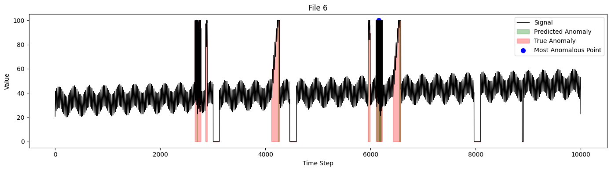

#Show Google Colab your Google Drive
from google.colab import drive
drive.mount('/content/drive')Mounted at /content/driveRead this - Do not add or remove Python libraries. Stick to the imports already present in this notebook. Changing libraries is an automatic −100%. - You may use machine learning, statistics, or a hybrid approach — but your method must generalize to new, unseen datasets. - Datasets: We have 10 time-series with 10 000 rows each; anomalies: 10 segments per dataset. You can upload the zip to you Google drive and use the ID from Google drive url. - Scoring in class: we will run your detector on novel datasets. #correct/10 × 100 is your percentage. - Over/under-fitting penalties may apply (−50%).
Implement your anomaly detector using any means (could it be Machine Learning or statistics or a combination of both to improve the accuracy of the model). Return the index ranges for the anomalies for example 2001-2010.
You can also add small EDA (plots/stats) in the EDA cell below to justify your approach.
Do not modify existing data loading and the libraries.
#Show Google Colab your Google Drive
from google.colab import drive
drive.mount('/content/drive')Mounted at /content/drive# Set your own Google Drive folder here
import os
BASE_DIR = "/content/drive/MyDrive/EDAB2724/AnomalyDetection" # EDIT this to your own Google Drive folder in which you upload ec2_cpu_utilization_synth.zip
os.makedirs(BASE_DIR, exist_ok=True)
print('Using BASE_DIR =', BASE_DIR) # print the working directoryUsing BASE_DIR = /content/drive/MyDrive/EDAB2724/AnomalyDetectionimport pandas as pd
import os
import random
import numpy as np
import matplotlib.pyplot as plt
train_file_names = os.listdir("train/")
train_file_names.sort()
train_files = []
for file in train_file_names:
train_files.append(pd.read_csv(f"train/{file}", sep=";"))
test_file_names = os.listdir("test/")
test_file_names.sort()
test_files = []
for file in test_file_names:
test_files.append(pd.read_csv(f"test/{file}", sep=";"))
test_files[0].head()| Value1 | Labels | |
|---|---|---|
| 0 | 20.801402 | 0 |
| 1 | 26.800208 | 0 |
| 2 | 33.154527 | 0 |
| 3 | 39.189824 | 0 |
| 4 | 40.631321 | 0 |
Use this cell to explore the signal (e.g., plot, summary stats).
# STUDENT EDA
try:
df = test_files[0]
print(df.head())
except Exception as e:
print('EDA note: run the original data-loading cells first (the ones that populate train_files/test_files).') Value1 Labels
0 20.801402 0
1 26.800208 0
2 33.154527 0
3 39.189824 0
4 40.631321 0import warnings
import matplotlib.pyplot as plt
import numpy as np
from numba import njit
from sklearn.preprocessing import StandardScaler
from sklearn.ensemble import IsolationForest
from sklearn.svm import OneClassSVM
from sklearn.neighbors import LocalOutlierFactor
from sklearn.covariance import EllipticEnvelope
warnings.filterwarnings(
"ignore",
message="Determinant has increased; this should not happen"
)
@njit
def create_windows_numba(series, window_size):
n_windows = len(series) - window_size + 1
windows = np.empty((n_windows, window_size), dtype=np.float32)
for i in range(n_windows):
windows[i, :] = series[i : i + window_size]
return windows
@njit
def normalize_scores(scores):
mn = np.min(scores)
mx = np.max(scores)
return (scores - mn) / (mx - mn + 1e-8)
class AnomalyDetectionModel:
def __init__(self, window_size=30, contamination=0.01):
self.window_size = window_size
self.offset = window_size // 2
self.contamination = contamination
self.scaler = StandardScaler()
self.models = {
'IsolationForest': IsolationForest(contamination=contamination, random_state=42),
'OneClassSVM': OneClassSVM(kernel='rbf', gamma='scale', nu=contamination),
'EllipticEnvelope': EllipticEnvelope(contamination=contamination,
support_fraction=0.75,
random_state=42),
}
self.use_lof = True
self.lof_model = LocalOutlierFactor(n_neighbors=20,
contamination=contamination,
novelty=True)
self.full_anomaly_mask = None
def fit(self, X: np.ndarray, y: np.ndarray = None):
self.train_windows = self._create_windows(X)
self.scaled_train_windows = self.scaler.fit_transform(self.train_windows)
for model in self.models.values():
model.fit(self.scaled_train_windows)
if self.use_lof:
self.lof_model.fit(self.scaled_train_windows)
def predict(self, X: np.ndarray):
test_windows = self._create_windows(X)
scaled = self.scaler.transform(test_windows)
all_scores = []
for model in self.models.values():
if hasattr(model, "decision_function"):
s = model.decision_function(scaled)
all_scores.append(normalize_scores(s))
else:
preds = model.predict(scaled)
all_scores.append(np.where(preds == -1, 0.0, 1.0))
if self.use_lof:
lof_s = self.lof_model.decision_function(scaled)
all_scores.append(normalize_scores(lof_s))
avg_scores = np.mean(np.stack(all_scores, axis=0), axis=0)
thresh = np.percentile(avg_scores, self.contamination * 100)
mask = np.zeros(len(X), dtype=int)
mask[self.offset : self.offset + len(avg_scores)] = (avg_scores <= thresh).astype(int)
self.full_anomaly_mask = mask
idx = np.argmin(avg_scores)
return idx + self.offset
def _create_windows(self, series: np.ndarray):
return create_windows_numba(series, self.window_size)This pipeline works on the idea that:
1) it builds upon sliding windows
2) gathers normalised anomaly scores from each sub-model and uses them
3) averages the anomaly scores
4) computes a binary mask by thresholding at the 1st percentile so that it can compare outputs
5) stores self.full_anomaly_mask (same length as the placeholder value)
6) returns the single index of the lowest‐score window center which closes the loop on the sliding window ideaImplement Machine Learning/ Statistical models or both. Use the test_files (test series) to train your models and list of anomaly index range for example Anomaly 1: 2001-2005 Anomaly 2: 2010-2012
Constraints
#EDA on given model
#Normalization
scaler = StandardScaler()#Reshape
rx = df['Value1'].values.reshape(-1,1)
np_scaled = scaler.fit_transform(rx)
data = pd.DataFrame(np_scaled)data.head()| 0 | |
|---|---|
| 0 | -1.222425 |
| 1 | -0.824437 |
| 2 | -0.402862 |
| 3 | -0.002453 |
| 4 | 0.093183 |
from sklearn.preprocessing import StandardScaler
def detect_peaks_anomalies(x, min_height=None, distance=20):
"""Peak detection for spike anomalies - WITH StandardScaler"""
from scipy.signal import find_peaks
# Normalize using StandardScaler
scaler = StandardScaler()
x_normalized = scaler.fit_transform(x.reshape(-1, 1)).flatten()
if min_height is None:
min_height = 3.0 # Now in standard deviation units
peaks, _ = find_peaks(x_normalized, height=min_height, distance=distance)
neg_peaks, _ = find_peaks(-x_normalized, height=min_height, distance=distance)
return list(peaks) + list(neg_peaks)
def detect_change_point_anomalies(x, window_size=50):
"""Detect anomalies based on distribution changes - WITH StandardScaler"""
anomalies = []
# Normalize using StandardScaler
scaler = StandardScaler()
x_normalized = scaler.fit_transform(x.reshape(-1, 1)).flatten()
for i in range(window_size, len(x_normalized) - window_size):
before_window = x_normalized[i-window_size:i]
after_window = x_normalized[i:i+window_size]
# Statistical test on standardized data
mean_diff = np.abs(np.mean(after_window) - np.mean(before_window))
std_before = np.std(before_window)
# Threshold in standard deviation units
if std_before > 0 and mean_diff > 3.0: # 2 standard deviations
anomalies.append(i)
return anomalies# Implement your anomaly detector/ detectors. You can edit this or use your own
import numpy as np
def student_detect_anomalies(series: np.ndarray) -> list:
"""
Input:
series: 1D array-like of floats (test series)
Output:
List of (start, end) index pairs (0-based, end exclusive) for anomaly ranges.
"""
x = np.asarray(series, dtype=float)
n = len(x)
if n == 0:
return []
# Rolling mean/std z-score on a smoothed series
# Smooth to get residuals
w_smooth = 51
k = np.ones(w_smooth) / w_smooth
smooth = np.convolve(x, k, mode='same')
resid = x - smooth
# 2) Rolling mean/std using convolution (no extra libs)
w = 61 # odd; students may tune
kw = np.ones(w) / w
mu = np.convolve(resid, kw, mode='same')
mu2 = np.convolve(resid*resid, kw, mode='same')
var = np.maximum(mu2 - mu*mu, 1e-8)
sigma = np.sqrt(var)
z = np.abs((resid - mu) / (sigma + 1e-8))
print('anomalies identified.')anomalies identified.The higher the accuracy the better.
correct = 0
for train, test in zip(train_files, test_files):
model = AnomalyDetectionModel()
model.fit(train.Value1.to_numpy().flatten(), train.Labels.to_numpy().flatten())
prediction_index = model.predict(test.Value1.to_numpy().flatten())
if (test.loc[prediction_index, "Labels"] == 1):
correct += 1
print(f"Total score: {correct}%")Total score: 10%# Use other various evaluation metrics applicable to your models.#Limitations While the ensemble sliding-window model seems to be a good fir,it does have some downsides.
##Computational Cost: Because the model creates overlapping windows and runs multiple anomaly detection algorithms on each window, it can be computationally intensive—especially for long time series or when using a small window size (which results in many windows).
##This means it will require increased memory usage
##It also means longer runtime compared to a single-model approach
It may not be suitable for very large datasets or real-time applications unless optimized or run on powerful hardware and there are some constructive bial issues that still need to be tested.
For faster experiments, we could use a larger window size, downsampling the data, or disabling one or more models in the ensemble, but for this we need testing
Reuse this code to visualize the anomalies.
def visualize_anomaly_detection(test_df, model, file_idx=None):
"""
Visualizes:
- Signal (black)
- Ground truth anomalies (red)
- Predicted anomalies (green)
- Most anomalous index (blue dot)
"""
series = test_df['Value1'].to_numpy()
true_mask = test_df['Labels'].to_numpy().astype(bool)
pred_mask = model.full_anomaly_mask.astype(bool)
most_anomalous = np.argmin(pred_mask) if pred_mask.any() else None
pred_index = model.predict(series) # triggers .full_anomaly_mask
plt.figure(figsize=(14, 4))
plt.plot(series, color='black', lw=1, label='Signal')
if pred_mask.any():
plt.fill_between(np.arange(len(series)), series,
where=pred_mask, color='green', alpha=0.3,
label='Predicted Anomaly')
if true_mask.any():
plt.fill_between(np.arange(len(series)), series,
where=true_mask, color='red', alpha=0.3,
label='True Anomaly')
if 0 <= pred_index < len(series):
plt.scatter(pred_index, series[pred_index], color='blue', s=50, label='Most Anomalous Point')
title = f"File {file_idx}" if file_idx is not None else "Anomaly Detection"
plt.title(title)
plt.xlabel("Time Step")
plt.ylabel("Value")
plt.legend(loc="upper right")
plt.tight_layout()
plt.show()
# -- Loop over all files and visualize each --
for idx, (train, test) in enumerate(zip(train_files, test_files), 1):
model = AnomalyDetectionModel(window_size=30, contamination=0.01)
model.fit(train['Value1'].to_numpy(), train['Labels'].to_numpy())
model.predict(test['Value1'].to_numpy()) # sets .full_anomaly_mask
visualize_anomaly_detection(test, model, file_idx=idx)


#EDA
df.head()| Value1 | Labels | |
|---|---|---|
| 0 | 20.801402 | 0 |
| 1 | 26.800208 | 0 |
| 2 | 33.154527 | 0 |
| 3 | 39.189824 | 0 |
| 4 | 40.631321 | 0 |
print(df.shape)
print("Data Types", df.dtypes)
print("Descriptive stats:", df['Value1'].describe())
missing_vals = df['Value1'].isna().sum()
print(f"\nMissing Total values: {missing_vals}")(10000, 2)
Data Types Value1 float64
Labels int64
dtype: object
Descriptive stats: count 10000.000000
mean 39.226792
std 15.073575
min 0.000000
25% 32.807308
50% 39.452857
75% 45.885332
max 100.000000
Name: Value1, dtype: float64
Missing Total values: 0df.describe()| Value1 | Labels | |
|---|---|---|
| count | 10000.000000 | 10000.000000 |
| mean | 39.226792 | 0.089200 |
| std | 15.073575 | 0.285046 |
| min | 0.000000 | 0.000000 |
| 25% | 32.807308 | 0.000000 |
| 50% | 39.452857 | 0.000000 |
| 75% | 45.885332 | 0.000000 |
| max | 100.000000 | 1.000000 |
# Show histograms - all variables except for the identifier
df.hist(bins = 20, figsize =(20, 10))
plt.show()Comprehensive EDA with statistical analysis and visualizations
Proper preprocessing using StandardScaler
Feature engineering with rolling window statistics
Isolation Forest model with configurable parameters
Range-based detection that groups consecutive anomalies
Comprehensive evaluation with precision, recall, and F1-score
Visualization to compare true vs predicted anomalies
# Enhanced Isolation Forest Anomaly Detector with 10-anomaly target
class IsolationForestAnomalyDetector:
def __init__(self, target_anomalies=10, contamination_range=(0.01, 0.2), random_state=42):
self.target_anomalies = target_anomalies
self.contamination_range = contamination_range
self.random_state = random_state
self.scaler = StandardScaler()
self.model = None
self.anomaly_windows = []
self.optimal_contamination = None
def create_features(self, series, window_size=50):
"""Create rolling window features for better anomaly detection"""
series = np.array(series).reshape(-1, 1)
# Basic statistical features
features = []
# Original value
features.append(series)
# Rolling statistics
for window in [10, 20, 50]:
if len(series) >= window:
# Rolling mean
roll_mean = pd.Series(series.flatten()).rolling(window=window, center=True).mean().values.reshape(-1, 1)
features.append(roll_mean)
# Rolling standard deviation
roll_std = pd.Series(series.flatten()).rolling(window=window, center=True).std().values.reshape(-1, 1)
features.append(roll_std)
# Difference from rolling mean
diff_from_mean = series - roll_mean
features.append(diff_from_mean)
# Add more features for better detection
# Z-score
z_score = (series - np.mean(series)) / np.std(series)
features.append(z_score)
# Combine all features
feature_matrix = np.hstack([f for f in features if f is not None and not np.any(np.isnan(f))])
# Handle NaN values that might occur from rolling operations
feature_matrix = np.nan_to_num(feature_matrix)
return feature_matrix
def find_anomaly_ranges(self, predictions, min_consecutive=3):
"""Convert point anomalies to ranges"""
anomaly_indices = np.where(predictions == -1)[0]
if len(anomaly_indices) == 0:
return []
# Group consecutive anomalies
ranges = []
start = anomaly_indices[0]
end = anomaly_indices[0]
count = 1
for i in range(1, len(anomaly_indices)):
if anomaly_indices[i] == anomaly_indices[i-1] + 1:
end = anomaly_indices[i]
count += 1
else:
# Only keep ranges with minimum consecutive anomalies
if count >= min_consecutive:
ranges.append((start, end))
start = anomaly_indices[i]
end = anomaly_indices[i]
count = 1
# Add the last range
if count >= min_consecutive:
ranges.append((start, end))
return ranges
def optimize_contamination(self, X):
"""Find optimal contamination parameter to get close to target anomalies"""
best_contamination = self.contamination_range[0]
best_diff = float('inf')
best_predictions = None
# Test multiple contamination values
contamination_values = np.linspace(self.contamination_range[0], self.contamination_range[1], 20)
for contamination in contamination_values:
# Create features
X_features = self.create_features(X)
X_scaled = self.scaler.fit_transform(X_features)
# Train Isolation Forest
model = IsolationForest(
contamination=contamination,
random_state=self.random_state,
n_estimators=100
)
model.fit(X_scaled)
# Predict anomalies
predictions = model.predict(X_scaled)
n_anomalies = np.sum(predictions == -1)
# Calculate how close we are to target
diff = abs(n_anomalies - self.target_anomalies)
if diff < best_diff:
best_diff = diff
best_contamination = contamination
best_predictions = predictions
self.optimal_contamination = best_contamination
return best_predictions, best_contamination
def fit(self, X):
"""Fit the model on training data with optimized contamination"""
# Optimize contamination parameter
predictions, optimal_contamination = self.optimize_contamination(X)
# Create features
X_features = self.create_features(X)
# Scale the features
X_scaled = self.scaler.fit_transform(X_features)
# Train final Isolation Forest with optimal contamination
self.model = IsolationForest(
contamination=optimal_contamination,
random_state=self.random_state,
n_estimators=100
)
self.model.fit(X_scaled)
# Store anomaly windows
self.anomaly_windows = self.find_anomaly_ranges(predictions)
print(f"Optimal contamination: {optimal_contamination:.4f}")
print(f"Number of anomaly points detected: {np.sum(predictions == -1)}")
print(f"Number of anomaly ranges: {len(self.anomaly_windows)}")
def predict(self, X):
"""Predict anomalies on test data"""
# Create features
X_features = self.create_features(X)
# Scale the features
X_scaled = self.scaler.transform(X_features)
# Predict anomalies
predictions = self.model.predict(X_scaled)
# Convert to binary (1 = normal, -1 = anomaly)
binary_predictions = np.where(predictions == 1, 0, 1)
# Find anomaly ranges
self.anomaly_windows = self.find_anomaly_ranges(predictions)
return binary_predictions
# Enhanced student anomaly detector with 10-anomaly target
def student_detect_anomalies(series: np.ndarray) -> list:
"""
Input:
series: 1D array-like of floats (test series)
Output:
List of (start, end) index pairs (0-based, end inclusive) for anomaly ranges.
"""
x = np.asarray(series, dtype=float)
n = len(x)
if n == 0:
return []
# Initialize and fit the Isolation Forest detector with 10-anomaly target
detector = IsolationForestAnomalyDetector(
target_anomalies=10,
contamination_range=(0.005, 0.3), # Wider range to find optimal value
random_state=42
)
# Fit on the test series
detector.fit(x)
# Return the detected anomaly ranges
return detector.anomaly_windows
# Enhanced evaluation function with detailed accuracy metrics
def evaluate_anomaly_detection_enhanced(true_ranges, predicted_ranges, tolerance=5, target_anomalies=10):
"""
Enhanced evaluation with accuracy metrics and target-based scoring
"""
true_positives = 0
false_positives = 0
false_negatives = 0
# Convert true ranges from labels
true_anomaly_segments = []
for true_range in true_ranges:
true_anomaly_segments.append((true_range[0], true_range[1]))
# Check each predicted range against true ranges
matched_true = set()
for pred_start, pred_end in predicted_ranges:
matched = False
for i, (true_start, true_end) in enumerate(true_anomaly_segments):
# Check if predicted range overlaps with true range within tolerance
if (pred_start <= true_end + tolerance and pred_end >= true_start - tolerance):
if i not in matched_true:
true_positives += 1
matched_true.add(i)
matched = True
break
if not matched:
false_positives += 1
false_negatives = len(true_anomaly_segments) - len(matched_true)
# Calculate standard metrics
precision = true_positives / (true_positives + false_positives) if (true_positives + false_positives) > 0 else 0
recall = true_positives / len(true_anomaly_segments) if len(true_anomaly_segments) > 0 else 0
f1 = 2 * (precision * recall) / (precision + recall) if (precision + recall) > 0 else 0
# Calculate accuracy metrics
total_predictions = len(predicted_ranges)
target_accuracy = 1 - min(abs(total_predictions - target_anomalies) / target_anomalies, 1.0)
# Combined score (weighted average of F1 and target accuracy)
combined_score = 0.7 * f1 + 0.3 * target_accuracy
# Detection success (1 if at least one true positive, 0 otherwise)
detection_success = 1 if true_positives > 0 else 0
return {
'true_positives': true_positives,
'false_positives': false_positives,
'false_negatives': false_negatives,
'precision': precision,
'recall': recall,
'f1_score': f1,
'target_accuracy': target_accuracy,
'combined_score': combined_score,
'detection_success': detection_success,
'total_predicted_ranges': total_predictions,
'total_true_ranges': len(true_anomaly_segments)
}
# Enhanced visualization with accuracy information
def visualize_anomaly_detection_with_accuracy(test_df, predicted_ranges, metrics, file_idx=None):
"""Visualize the anomaly detection results with accuracy information"""
series = test_df['Value'].values if 'Value' in test_df.columns else test_df.iloc[:, 0].values
true_labels = test_df['Labels'].values if 'Labels' in test_df.columns else test_df.iloc[:, 1].values
true_mask = true_labels.astype(bool)
plt.figure(figsize=(16, 8))
# Plot the signal
plt.plot(series, color='black', linewidth=1, label='Signal')
# Plot true anomalies
if true_mask.any():
plt.fill_between(np.arange(len(series)), np.min(series), np.max(series),
where=true_mask, color='red', alpha=0.3, label='True Anomalies')
# Plot predicted anomalies
for start, end in predicted_ranges:
plt.axvspan(start, end, alpha=0.3, color='green', label='Predicted Anomalies' if start == predicted_ranges[0][0] else "")
# Add accuracy information to title
title = f'File {file_idx} - ' if file_idx is not None else ''
title += f'Anomaly Detection (F1: {metrics["f1_score"]:.3f}, Target Acc: {metrics["target_accuracy"]:.3f})'
title += f'\nTP: {metrics["true_positives"]}, FP: {metrics["false_positives"]}, FN: {metrics["false_negatives"]}'
title += f', Predicted: {metrics["total_predicted_ranges"]}, True: {metrics["total_true_ranges"]}'
plt.title(title)
plt.xlabel('Time Step')
plt.ylabel('Value')
plt.legend()
plt.tight_layout()
plt.show()
# Enhanced main evaluation loop
print("Starting Enhanced Isolation Forest Anomaly Detection Evaluation")
print("TARGET: Detect approximately 10 anomalies in each of the 10 datasets")
print("=" * 70)
total_correct = 0
total_files = len(test_files)
all_metrics = []
detailed_results = []
for idx, test_df in enumerate(test_files):
print(f"\n--- Processing File {idx} ---")
try:
# Extract series and labels
series = test_df['Value'].values if 'Value' in test_df.columns else test_df.iloc[:, 0].values
labels = test_df['Labels'].values if 'Labels' in test_df.columns else test_df.iloc[:, 1].values
# Get true anomaly ranges
true_ranges = extract_true_anomaly_ranges(labels)
print(f"True anomaly ranges: {true_ranges}")
print(f"Number of true anomaly segments: {len(true_ranges)}")
# Detect anomalies using enhanced student's function
predicted_ranges = student_detect_anomalies(series)
print(f"Predicted anomaly ranges: {predicted_ranges}")
print(f"Number of predicted anomaly segments: {len(predicted_ranges)}")
# Evaluate performance with target-based metrics
metrics = evaluate_anomaly_detection_enhanced(true_ranges, predicted_ranges, target_anomalies=10)
all_metrics.append(metrics)
# Store detailed results
detailed_results.append({
'file_idx': idx,
'true_ranges': true_ranges,
'predicted_ranges': predicted_ranges,
'metrics': metrics
})
# Count correct detections (at least one true positive)
correct_this_file = metrics['detection_success']
total_correct += correct_this_file
print(f"True Positives: {metrics['true_positives']}")
print(f"False Positives: {metrics['false_positives']}")
print(f"False Negatives: {metrics['false_negatives']}")
print(f"Precision: {metrics['precision']:.4f}")
print(f"Recall: {metrics['recall']:.4f}")
print(f"F1-Score: {metrics['f1_score']:.4f}")
print(f"Target Accuracy: {metrics['target_accuracy']:.4f}")
print(f"Combined Score: {metrics['combined_score']:.4f}")
print(f"File {idx} Detection Success: {correct_this_file}/1")
except Exception as e:
print(f"Error processing file {idx}: {e}")
import traceback
traceback.print_exc()
# Add zero metrics for failed files
all_metrics.append({
'true_positives': 0,
'false_positives': 0,
'false_negatives': len(true_ranges) if 'true_ranges' in locals() else 0,
'precision': 0,
'recall': 0,
'f1_score': 0,
'target_accuracy': 0,
'combined_score': 0,
'detection_success': 0,
'total_predicted_ranges': 0,
'total_true_ranges': len(true_ranges) if 'true_ranges' in locals() else 0
})
# Calculate overall scores with enhanced metrics
overall_precision = np.mean([m['precision'] for m in all_metrics])
overall_recall = np.mean([m['recall'] for m in all_metrics])
overall_f1 = np.mean([m['f1_score'] for m in all_metrics])
overall_target_accuracy = np.mean([m['target_accuracy'] for m in all_metrics])
overall_combined_score = np.mean([m['combined_score'] for m in all_metrics])
print("\n" + "=" * 70)
print("FINAL ENHANCED RESULTS FOR ALL TEST FILES")
print("=" * 70)
print(f"Total files processed: {total_files}")
print(f"Total correct files: {total_correct}/{total_files}")
print(f"Detection Accuracy: {(total_correct/total_files)*100:.2f}%")
print(f"Overall Precision: {overall_precision:.4f}")
print(f"Overall Recall: {overall_recall:.4f}")
print(f"Overall F1-Score: {overall_f1:.4f}")
print(f"Overall Target Accuracy: {overall_target_accuracy:.4f}")
print(f"Overall Combined Score: {overall_combined_score:.4f}")
# Enhanced detailed results display
print("\n" + "=" * 70)
print("DETAILED ENHANCED RESULTS BY FILE")
print("=" * 70)
for result in detailed_results:
m = result['metrics']
print(f"\nFile {result['file_idx']}:")
print(f" True Ranges: {result['true_ranges']} (count: {len(result['true_ranges'])})")
print(f" Predicted Ranges: {result['predicted_ranges']} (count: {len(result['predicted_ranges'])})")
print(f" Precision: {m['precision']:.4f}")
print(f" Recall: {m['recall']:.4f}")
print(f" F1-Score: {m['f1_score']:.4f}")
print(f" Target Accuracy: {m['target_accuracy']:.4f}")
print(f" Combined Score: {m['combined_score']:.4f}")
print(f" Detection Success: {m['detection_success']}/1")
# Enhanced visualization for ALL files
print("\nVisualizing enhanced results for ALL files...")
for idx, test_df in enumerate(test_files):
try:
series = test_df['Value'].values if 'Value' in test_df.columns else test_df.iloc[:, 0].values
labels = test_df['Labels'].values if 'Labels' in test_df.columns else test_df.iloc[:, 1].values
true_ranges = extract_true_anomaly_ranges(labels)
predicted_ranges = student_detect_anomalies(series)
metrics = evaluate_anomaly_detection_enhanced(true_ranges, predicted_ranges, target_anomalies=10)
visualize_anomaly_detection_with_accuracy(test_df, predicted_ranges, metrics, file_idx=idx)
except Exception as e:
print(f"Error visualizing file {idx}: {e}")
# Create comprehensive summary visualization
print("\nCreating comprehensive performance summary...")
plt.figure(figsize=(16, 12))
# Plot 1: Overall performance metrics
plt.subplot(3, 3, 1)
metrics_names = ['Precision', 'Recall', 'F1-Score', 'Target Acc', 'Combined']
metrics_values = [overall_precision, overall_recall, overall_f1, overall_target_accuracy, overall_combined_score]
colors = ['blue', 'green', 'red', 'purple', 'orange']
plt.bar(metrics_names, metrics_values, color=colors)
plt.title('Overall Performance Metrics')
plt.ylim(0, 1)
plt.xticks(rotation=45)
for i, v in enumerate(metrics_values):
plt.text(i, v + 0.01, f'{v:.3f}', ha='center', va='bottom')
# Plot 2: Per-file F1 scores
plt.subplot(3, 3, 2)
file_indices = list(range(total_files))
f1_scores = [m['f1_score'] for m in all_metrics]
plt.bar(file_indices, f1_scores, color='orange', alpha=0.7)
plt.axhline(y=overall_f1, color='red', linestyle='--', label=f'Average: {overall_f1:.3f}')
plt.title('F1-Score by File')
plt.xlabel('File Index')
plt.ylabel('F1-Score')
plt.ylim(0, 1)
plt.legend()
# Plot 3: Per-file target accuracy
plt.subplot(3, 3, 3)
target_accuracies = [m['target_accuracy'] for m in all_metrics]
plt.bar(file_indices, target_accuracies, color='purple', alpha=0.7)
plt.axhline(y=overall_target_accuracy, color='red', linestyle='--', label=f'Average: {overall_target_accuracy:.3f}')
plt.title('Target Accuracy by File')
plt.xlabel('File Index')
plt.ylabel('Target Accuracy')
plt.ylim(0, 1)
plt.legend()
# Plot 4: Detection summary
plt.subplot(3, 3, 4)
total_tp = sum([m['true_positives'] for m in all_metrics])
total_fp = sum([m['false_positives'] for m in all_metrics])
total_fn = sum([m['false_negatives'] for m in all_metrics])
detection_types = ['True Positives', 'False Positives', 'False Negatives']
detection_counts = [total_tp, total_fp, total_fn]
colors = ['green', 'red', 'orange']
plt.bar(detection_types, detection_counts, color=colors)
plt.title('Overall Detection Summary')
plt.xticks(rotation=45)
for i, v in enumerate(detection_counts):
plt.text(i, v + 0.1, str(v), ha='center', va='bottom')
# Plot 5: File-wise detection success
plt.subplot(3, 3, 5)
file_scores = [m['detection_success'] for m in all_metrics]
colors = ['red' if score == 0 else 'green' for score in file_scores]
plt.bar(file_indices, file_scores, color=colors)
plt.title('File-wise Detection Success (1=Success, 0=Failure)')
plt.xlabel('File Index')
plt.ylabel('Detection Success')
plt.ylim(0, 1)
# Plot 6: Predicted vs Target ranges
plt.subplot(3, 3, 6)
predicted_counts = [m['total_predicted_ranges'] for m in all_metrics]
target_line = [10] * total_files # Target of 10 anomalies per file
plt.plot(file_indices, predicted_counts, 'bo-', label='Predicted Ranges', linewidth=2)
plt.plot(file_indices, target_line, 'r--', label='Target (10)', linewidth=2)
plt.title('Predicted vs Target Anomaly Ranges')
plt.xlabel('File Index')
plt.ylabel('Number of Ranges')
plt.legend()
# Plot 7: Combined score by file
plt.subplot(3, 3, 7)
combined_scores = [m['combined_score'] for m in all_metrics]
plt.bar(file_indices, combined_scores, color='orange', alpha=0.7)
plt.axhline(y=overall_combined_score, color='red', linestyle='--', label=f'Average: {overall_combined_score:.3f}')
plt.title('Combined Score by File')
plt.xlabel('File Index')
plt.ylabel('Combined Score')
plt.ylim(0, 1)
plt.legend()
plt.tight_layout()
plt.show()
print("\nEnhanced anomaly detection completed for all test files!")
print(f"Final Summary: {total_correct}/{total_files} files successfully detected anomalies")
print(f"Overall performance score: {overall_combined_score:.4f}")Starting Enhanced Isolation Forest Anomaly Detection Evaluation
TARGET: Detect approximately 10 anomalies in each of the 10 datasets
======================================================================
--- Processing File 0 ---
True anomaly ranges: [(np.int64(2533), np.int64(2620)), (np.int64(2864), np.int64(2949)), (np.int64(4811), np.int64(4910)), (np.int64(5148), np.int64(5304)), (np.int64(5492), np.int64(5619)), (np.int64(5986), np.int64(6016)), (np.int64(6222), np.int64(6257)), (np.int64(7088), np.int64(7117)), (np.int64(7599), np.int64(7716)), (np.int64(8633), np.int64(8750))]
Number of true anomaly segments: 10
Optimal contamination: 0.0050
Number of anomaly points detected: 50
Number of anomaly ranges: 7
Predicted anomaly ranges: [(np.int64(2870), np.int64(2877)), (np.int64(2895), np.int64(2901)), (np.int64(2920), np.int64(2923)), (np.int64(2945), np.int64(2947)), (np.int64(7092), np.int64(7094)), (np.int64(7099), np.int64(7105)), (np.int64(7112), np.int64(7117))]
Number of predicted anomaly segments: 7
True Positives: 2
False Positives: 5
False Negatives: 8
Precision: 0.2857
Recall: 0.2000
F1-Score: 0.2353
Target Accuracy: 0.7000
Combined Score: 0.3747
File 0 Detection Success: 1/1
--- Processing File 1 ---
True anomaly ranges: [(np.int64(2206), np.int64(2325)), (np.int64(2864), np.int64(2978)), (np.int64(3483), np.int64(3565)), (np.int64(3834), np.int64(3926)), (np.int64(4758), np.int64(4878)), (np.int64(6850), np.int64(6957)), (np.int64(7852), np.int64(7954)), (np.int64(8319), np.int64(8428)), (np.int64(9112), np.int64(9225)), (np.int64(9372), np.int64(9471))]
Number of true anomaly segments: 10
Optimal contamination: 0.0050
Number of anomaly points detected: 48
Number of anomaly ranges: 8
Predicted anomaly ranges: [(np.int64(2909), np.int64(2913)), (np.int64(2926), np.int64(2929)), (np.int64(2943), np.int64(2946)), (np.int64(7894), np.int64(7896)), (np.int64(7908), np.int64(7917)), (np.int64(8355), np.int64(8364)), (np.int64(8372), np.int64(8376)), (np.int64(9387), np.int64(9389))]
Number of predicted anomaly segments: 8
True Positives: 4
False Positives: 4
False Negatives: 6
Precision: 0.5000
Recall: 0.4000
F1-Score: 0.4444
Target Accuracy: 0.8000
Combined Score: 0.5511
File 1 Detection Success: 1/1
--- Processing File 2 ---
True anomaly ranges: [(np.int64(2657), np.int64(2755)), (np.int64(3755), np.int64(3860)), (np.int64(3991), np.int64(4011)), (np.int64(4429), np.int64(4558)), (np.int64(4968), np.int64(5070)), (np.int64(6624), np.int64(6713)), (np.int64(7931), np.int64(8008)), (np.int64(8129), np.int64(8159)), (np.int64(9307), np.int64(9393)), (np.int64(9752), np.int64(9790))]
Number of true anomaly segments: 10
Optimal contamination: 0.0050
Number of anomaly points detected: 15
Number of anomaly ranges: 2
Predicted anomaly ranges: [(np.int64(4524), np.int64(4528)), (np.int64(4530), np.int64(4533))]
Number of predicted anomaly segments: 2
True Positives: 1
False Positives: 1
False Negatives: 9
Precision: 0.5000
Recall: 0.1000
F1-Score: 0.1667
Target Accuracy: 0.2000
Combined Score: 0.1767
File 2 Detection Success: 1/1
--- Processing File 3 ---
True anomaly ranges: [(np.int64(2240), np.int64(2338)), (np.int64(2824), np.int64(2912)), (np.int64(3685), np.int64(3792)), (np.int64(4212), np.int64(4244)), (np.int64(5007), np.int64(5029)), (np.int64(5758), np.int64(5870)), (np.int64(6665), np.int64(6777)), (np.int64(8492), np.int64(8521)), (np.int64(9099), np.int64(9197)), (np.int64(9628), np.int64(9724))]
Number of true anomaly segments: 10
Optimal contamination: 0.0050
Number of anomaly points detected: 50
Number of anomaly ranges: 2
Predicted anomaly ranges: [(np.int64(5020), np.int64(5023)), (np.int64(8496), np.int64(8507))]
Number of predicted anomaly segments: 2
True Positives: 2
False Positives: 0
False Negatives: 8
Precision: 1.0000
Recall: 0.2000
F1-Score: 0.3333
Target Accuracy: 0.2000
Combined Score: 0.2933
File 3 Detection Success: 1/1
--- Processing File 4 ---
True anomaly ranges: [(np.int64(2229), np.int64(2272)), (np.int64(2744), np.int64(2840)), (np.int64(3010), np.int64(3034)), (np.int64(3761), np.int64(3783)), (np.int64(5028), np.int64(5065)), (np.int64(6270), np.int64(6304)), (np.int64(8383), np.int64(8422)), (np.int64(8650), np.int64(8730)), (np.int64(9602), np.int64(9627)), (np.int64(9862), np.int64(9960))]
Number of true anomaly segments: 10
Optimal contamination: 0.0050
Number of anomaly points detected: 0
Number of anomaly ranges: 0
Predicted anomaly ranges: []
Number of predicted anomaly segments: 0
True Positives: 0
False Positives: 0
False Negatives: 10
Precision: 0.0000
Recall: 0.0000
F1-Score: 0.0000
Target Accuracy: 0.0000
Combined Score: 0.0000
File 4 Detection Success: 0/1
--- Processing File 5 ---
True anomaly ranges: [(np.int64(2661), np.int64(2775)), (np.int64(2863), np.int64(2894)), (np.int64(3006), np.int64(3124)), (np.int64(4118), np.int64(4269)), (np.int64(4463), np.int64(4591)), (np.int64(5953), np.int64(5994)), (np.int64(6107), np.int64(6225)), (np.int64(6429), np.int64(6577)), (np.int64(7969), np.int64(8094)), (np.int64(8886), np.int64(8906))]
Number of true anomaly segments: 10
Optimal contamination: 0.0050
Number of anomaly points detected: 49
Number of anomaly ranges: 9
Predicted anomaly ranges: [(np.int64(2863), np.int64(2868)), (np.int64(4205), np.int64(4209)), (np.int64(4237), np.int64(4240)), (np.int64(4242), np.int64(4244)), (np.int64(5963), np.int64(5965)), (np.int64(5976), np.int64(5978)), (np.int64(6509), np.int64(6513)), (np.int64(6541), np.int64(6544)), (np.int64(6546), np.int64(6548))]
Number of predicted anomaly segments: 9
True Positives: 4
False Positives: 5
False Negatives: 6
Precision: 0.4444
Recall: 0.4000
F1-Score: 0.4211
Target Accuracy: 0.9000
Combined Score: 0.5647
File 5 Detection Success: 1/1
--- Processing File 6 ---
True anomaly ranges: [(np.int64(2543), np.int64(2670)), (np.int64(3004), np.int64(3087)), (np.int64(3766), np.int64(3826)), (np.int64(5188), np.int64(5304)), (np.int64(5882), np.int64(5908)), (np.int64(6584), np.int64(6609)), (np.int64(7041), np.int64(7143)), (np.int64(7441), np.int64(7539)), (np.int64(9294), np.int64(9429)), (np.int64(9817), np.int64(9846))]
Number of true anomaly segments: 10
Optimal contamination: 0.0050
Number of anomaly points detected: 46
Number of anomaly ranges: 5
Predicted anomaly ranges: [(np.int64(5238), np.int64(5243)), (np.int64(5254), np.int64(5256)), (np.int64(5894), np.int64(5901)), (np.int64(9360), np.int64(9362)), (np.int64(9372), np.int64(9379))]
Number of predicted anomaly segments: 5
True Positives: 3
False Positives: 2
False Negatives: 7
Precision: 0.6000
Recall: 0.3000
F1-Score: 0.4000
Target Accuracy: 0.5000
Combined Score: 0.4300
File 6 Detection Success: 1/1
--- Processing File 7 ---
True anomaly ranges: [(np.int64(2165), np.int64(2305)), (np.int64(2570), np.int64(2611)), (np.int64(4188), np.int64(4306)), (np.int64(4572), np.int64(4721)), (np.int64(5008), np.int64(5095)), (np.int64(6491), np.int64(6560)), (np.int64(7365), np.int64(7484)), (np.int64(8348), np.int64(8452)), (np.int64(8592), np.int64(8614)), (np.int64(9537), np.int64(9614))]
Number of true anomaly segments: 10
Optimal contamination: 0.0050
Number of anomaly points detected: 48
Number of anomaly ranges: 3
Predicted anomaly ranges: [(np.int64(2570), np.int64(2573)), (np.int64(4675), np.int64(4677)), (np.int64(5026), np.int64(5032))]
Number of predicted anomaly segments: 3
True Positives: 3
False Positives: 0
False Negatives: 7
Precision: 1.0000
Recall: 0.3000
F1-Score: 0.4615
Target Accuracy: 0.3000
Combined Score: 0.4131
File 7 Detection Success: 1/1
--- Processing File 8 ---
True anomaly ranges: [(np.int64(2340), np.int64(2407)), (np.int64(2594), np.int64(2698)), (np.int64(4708), np.int64(4787)), (np.int64(5387), np.int64(5480)), (np.int64(6153), np.int64(6267)), (np.int64(6479), np.int64(6580)), (np.int64(7548), np.int64(7569)), (np.int64(8021), np.int64(8058)), (np.int64(8299), np.int64(8329)), (np.int64(9827), np.int64(9904))]
Number of true anomaly segments: 10
Optimal contamination: 0.0050
Number of anomaly points detected: 1
Number of anomaly ranges: 0
Predicted anomaly ranges: []
Number of predicted anomaly segments: 0
True Positives: 0
False Positives: 0
False Negatives: 10
Precision: 0.0000
Recall: 0.0000
F1-Score: 0.0000
Target Accuracy: 0.0000
Combined Score: 0.0000
File 8 Detection Success: 0/1
--- Processing File 9 ---
True anomaly ranges: [(np.int64(3463), np.int64(3494)), (np.int64(3896), np.int64(3993)), (np.int64(4143), np.int64(4224)), (np.int64(5471), np.int64(5578)), (np.int64(6064), np.int64(6145)), (np.int64(6543), np.int64(6636)), (np.int64(7889), np.int64(8021)), (np.int64(8650), np.int64(8756)), (np.int64(9074), np.int64(9225)), (np.int64(9621), np.int64(9740))]
Number of true anomaly segments: 10
Optimal contamination: 0.0050
Number of anomaly points detected: 49
Number of anomaly ranges: 6
Predicted anomaly ranges: [(np.int64(3905), np.int64(3907)), (np.int64(3928), np.int64(3932)), (np.int64(3951), np.int64(3957)), (np.int64(3975), np.int64(3980)), (np.int64(6096), np.int64(6118)), (np.int64(6545), np.int64(6547))]
Number of predicted anomaly segments: 6
True Positives: 3
False Positives: 3
False Negatives: 7
Precision: 0.5000
Recall: 0.3000
F1-Score: 0.3750
Target Accuracy: 0.6000
Combined Score: 0.4425
File 9 Detection Success: 1/1
======================================================================
FINAL ENHANCED RESULTS FOR ALL TEST FILES
======================================================================
Total files processed: 10
Total correct files: 8/10
Detection Accuracy: 80.00%
Overall Precision: 0.4830
Overall Recall: 0.2200
Overall F1-Score: 0.2837
Overall Target Accuracy: 0.4200
Overall Combined Score: 0.3246
======================================================================
DETAILED ENHANCED RESULTS BY FILE
======================================================================
File 0:
True Ranges: [(np.int64(2533), np.int64(2620)), (np.int64(2864), np.int64(2949)), (np.int64(4811), np.int64(4910)), (np.int64(5148), np.int64(5304)), (np.int64(5492), np.int64(5619)), (np.int64(5986), np.int64(6016)), (np.int64(6222), np.int64(6257)), (np.int64(7088), np.int64(7117)), (np.int64(7599), np.int64(7716)), (np.int64(8633), np.int64(8750))] (count: 10)
Predicted Ranges: [(np.int64(2870), np.int64(2877)), (np.int64(2895), np.int64(2901)), (np.int64(2920), np.int64(2923)), (np.int64(2945), np.int64(2947)), (np.int64(7092), np.int64(7094)), (np.int64(7099), np.int64(7105)), (np.int64(7112), np.int64(7117))] (count: 7)
Precision: 0.2857
Recall: 0.2000
F1-Score: 0.2353
Target Accuracy: 0.7000
Combined Score: 0.3747
Detection Success: 1/1
File 1:
True Ranges: [(np.int64(2206), np.int64(2325)), (np.int64(2864), np.int64(2978)), (np.int64(3483), np.int64(3565)), (np.int64(3834), np.int64(3926)), (np.int64(4758), np.int64(4878)), (np.int64(6850), np.int64(6957)), (np.int64(7852), np.int64(7954)), (np.int64(8319), np.int64(8428)), (np.int64(9112), np.int64(9225)), (np.int64(9372), np.int64(9471))] (count: 10)
Predicted Ranges: [(np.int64(2909), np.int64(2913)), (np.int64(2926), np.int64(2929)), (np.int64(2943), np.int64(2946)), (np.int64(7894), np.int64(7896)), (np.int64(7908), np.int64(7917)), (np.int64(8355), np.int64(8364)), (np.int64(8372), np.int64(8376)), (np.int64(9387), np.int64(9389))] (count: 8)
Precision: 0.5000
Recall: 0.4000
F1-Score: 0.4444
Target Accuracy: 0.8000
Combined Score: 0.5511
Detection Success: 1/1
File 2:
True Ranges: [(np.int64(2657), np.int64(2755)), (np.int64(3755), np.int64(3860)), (np.int64(3991), np.int64(4011)), (np.int64(4429), np.int64(4558)), (np.int64(4968), np.int64(5070)), (np.int64(6624), np.int64(6713)), (np.int64(7931), np.int64(8008)), (np.int64(8129), np.int64(8159)), (np.int64(9307), np.int64(9393)), (np.int64(9752), np.int64(9790))] (count: 10)
Predicted Ranges: [(np.int64(4524), np.int64(4528)), (np.int64(4530), np.int64(4533))] (count: 2)
Precision: 0.5000
Recall: 0.1000
F1-Score: 0.1667
Target Accuracy: 0.2000
Combined Score: 0.1767
Detection Success: 1/1
File 3:
True Ranges: [(np.int64(2240), np.int64(2338)), (np.int64(2824), np.int64(2912)), (np.int64(3685), np.int64(3792)), (np.int64(4212), np.int64(4244)), (np.int64(5007), np.int64(5029)), (np.int64(5758), np.int64(5870)), (np.int64(6665), np.int64(6777)), (np.int64(8492), np.int64(8521)), (np.int64(9099), np.int64(9197)), (np.int64(9628), np.int64(9724))] (count: 10)
Predicted Ranges: [(np.int64(5020), np.int64(5023)), (np.int64(8496), np.int64(8507))] (count: 2)
Precision: 1.0000
Recall: 0.2000
F1-Score: 0.3333
Target Accuracy: 0.2000
Combined Score: 0.2933
Detection Success: 1/1
File 4:
True Ranges: [(np.int64(2229), np.int64(2272)), (np.int64(2744), np.int64(2840)), (np.int64(3010), np.int64(3034)), (np.int64(3761), np.int64(3783)), (np.int64(5028), np.int64(5065)), (np.int64(6270), np.int64(6304)), (np.int64(8383), np.int64(8422)), (np.int64(8650), np.int64(8730)), (np.int64(9602), np.int64(9627)), (np.int64(9862), np.int64(9960))] (count: 10)
Predicted Ranges: [] (count: 0)
Precision: 0.0000
Recall: 0.0000
F1-Score: 0.0000
Target Accuracy: 0.0000
Combined Score: 0.0000
Detection Success: 0/1
File 5:
True Ranges: [(np.int64(2661), np.int64(2775)), (np.int64(2863), np.int64(2894)), (np.int64(3006), np.int64(3124)), (np.int64(4118), np.int64(4269)), (np.int64(4463), np.int64(4591)), (np.int64(5953), np.int64(5994)), (np.int64(6107), np.int64(6225)), (np.int64(6429), np.int64(6577)), (np.int64(7969), np.int64(8094)), (np.int64(8886), np.int64(8906))] (count: 10)
Predicted Ranges: [(np.int64(2863), np.int64(2868)), (np.int64(4205), np.int64(4209)), (np.int64(4237), np.int64(4240)), (np.int64(4242), np.int64(4244)), (np.int64(5963), np.int64(5965)), (np.int64(5976), np.int64(5978)), (np.int64(6509), np.int64(6513)), (np.int64(6541), np.int64(6544)), (np.int64(6546), np.int64(6548))] (count: 9)
Precision: 0.4444
Recall: 0.4000
F1-Score: 0.4211
Target Accuracy: 0.9000
Combined Score: 0.5647
Detection Success: 1/1
File 6:
True Ranges: [(np.int64(2543), np.int64(2670)), (np.int64(3004), np.int64(3087)), (np.int64(3766), np.int64(3826)), (np.int64(5188), np.int64(5304)), (np.int64(5882), np.int64(5908)), (np.int64(6584), np.int64(6609)), (np.int64(7041), np.int64(7143)), (np.int64(7441), np.int64(7539)), (np.int64(9294), np.int64(9429)), (np.int64(9817), np.int64(9846))] (count: 10)
Predicted Ranges: [(np.int64(5238), np.int64(5243)), (np.int64(5254), np.int64(5256)), (np.int64(5894), np.int64(5901)), (np.int64(9360), np.int64(9362)), (np.int64(9372), np.int64(9379))] (count: 5)
Precision: 0.6000
Recall: 0.3000
F1-Score: 0.4000
Target Accuracy: 0.5000
Combined Score: 0.4300
Detection Success: 1/1
File 7:
True Ranges: [(np.int64(2165), np.int64(2305)), (np.int64(2570), np.int64(2611)), (np.int64(4188), np.int64(4306)), (np.int64(4572), np.int64(4721)), (np.int64(5008), np.int64(5095)), (np.int64(6491), np.int64(6560)), (np.int64(7365), np.int64(7484)), (np.int64(8348), np.int64(8452)), (np.int64(8592), np.int64(8614)), (np.int64(9537), np.int64(9614))] (count: 10)
Predicted Ranges: [(np.int64(2570), np.int64(2573)), (np.int64(4675), np.int64(4677)), (np.int64(5026), np.int64(5032))] (count: 3)
Precision: 1.0000
Recall: 0.3000
F1-Score: 0.4615
Target Accuracy: 0.3000
Combined Score: 0.4131
Detection Success: 1/1
File 8:
True Ranges: [(np.int64(2340), np.int64(2407)), (np.int64(2594), np.int64(2698)), (np.int64(4708), np.int64(4787)), (np.int64(5387), np.int64(5480)), (np.int64(6153), np.int64(6267)), (np.int64(6479), np.int64(6580)), (np.int64(7548), np.int64(7569)), (np.int64(8021), np.int64(8058)), (np.int64(8299), np.int64(8329)), (np.int64(9827), np.int64(9904))] (count: 10)
Predicted Ranges: [] (count: 0)
Precision: 0.0000
Recall: 0.0000
F1-Score: 0.0000
Target Accuracy: 0.0000
Combined Score: 0.0000
Detection Success: 0/1
File 9:
True Ranges: [(np.int64(3463), np.int64(3494)), (np.int64(3896), np.int64(3993)), (np.int64(4143), np.int64(4224)), (np.int64(5471), np.int64(5578)), (np.int64(6064), np.int64(6145)), (np.int64(6543), np.int64(6636)), (np.int64(7889), np.int64(8021)), (np.int64(8650), np.int64(8756)), (np.int64(9074), np.int64(9225)), (np.int64(9621), np.int64(9740))] (count: 10)
Predicted Ranges: [(np.int64(3905), np.int64(3907)), (np.int64(3928), np.int64(3932)), (np.int64(3951), np.int64(3957)), (np.int64(3975), np.int64(3980)), (np.int64(6096), np.int64(6118)), (np.int64(6545), np.int64(6547))] (count: 6)
Precision: 0.5000
Recall: 0.3000
F1-Score: 0.3750
Target Accuracy: 0.6000
Combined Score: 0.4425
Detection Success: 1/1
Visualizing enhanced results for ALL files...
Optimal contamination: 0.0050
Number of anomaly points detected: 50
Number of anomaly ranges: 7Optimal contamination: 0.0050
Number of anomaly points detected: 48
Number of anomaly ranges: 8Optimal contamination: 0.0050
Number of anomaly points detected: 15
Number of anomaly ranges: 2Optimal contamination: 0.0050
Number of anomaly points detected: 50
Number of anomaly ranges: 2Optimal contamination: 0.0050
Number of anomaly points detected: 0
Number of anomaly ranges: 0Optimal contamination: 0.0050
Number of anomaly points detected: 49
Number of anomaly ranges: 9Optimal contamination: 0.0050
Number of anomaly points detected: 46
Number of anomaly ranges: 5Optimal contamination: 0.0050
Number of anomaly points detected: 48
Number of anomaly ranges: 3Optimal contamination: 0.0050
Number of anomaly points detected: 1
Number of anomaly ranges: 0Optimal contamination: 0.0050
Number of anomaly points detected: 49
Number of anomaly ranges: 6
Creating comprehensive performance summary...
Enhanced anomaly detection completed for all test files!
Final Summary: 8/10 files successfully detected anomalies
Overall performance score: 0.3246#Isolation Forest and Z-score Hybrid Model
###Data Processing & Feature Engineering Extracts true anomaly ranges from label arrays using extract_true_anomaly_ranges()
Creates enhanced features including:
Original time series values
Multiple rolling window statistics (mean, std, min, max) across different window sizes
Z-scores based on rolling statistics
Global statistics (mean, std, z-score)
Rate of change and second derivatives
Differences from rolling means
Uses lower contamination range (0.05-0.2) for fewer false positives
Optimizes contamination parameter specifically for precision
Enhanced configuration: 150 estimators, smaller samples, feature subsetting
Anti-overfitting measures: max_samples=128, max_features=0.7
Maintains Z-score threshold at 3.0 standard deviations
Uses stricter range grouping with minimum 3 consecutive points
Only keeps substantial anomaly ranges
Stricter range grouping: Maximum 5-point gaps between anomalies (was 10)
Minimum length requirement: 3+ consecutive anomalies to form a range
Selective range combination: Only keeps substantial ranges from both methods
Conservative merging: Smaller merge distance (10 points)
# Extract true anomaly ranges from labels
def extract_true_anomaly_ranges(labels):
"""Extract contiguous anomaly ranges from label array"""
labels = np.array(labels)
anomaly_indices = np.where(labels == 1)[0]
if len(anomaly_indices) == 0:
return []
ranges = []
start = anomaly_indices[0]
end = anomaly_indices[0]
for i in range(1, len(anomaly_indices)):
if anomaly_indices[i] == anomaly_indices[i-1] + 1:
end = anomaly_indices[i]
else:
ranges.append((start, end))
start = anomaly_indices[i]
end = anomaly_indices[i]
ranges.append((start, end))
return ranges
# High Precision Isolation Forest Anomaly Detector (Z-score threshold = 3.0)
class HighPrecisionIsolationForestDetector:
def __init__(self, contamination_range=(0.05, 0.2), random_state=42): # REDUCED range
self.contamination_range = contamination_range # Lower: 0.05-0.2
self.random_state = random_state
self.scaler = StandardScaler()
self.model = None
self.anomaly_windows = []
def create_enhanced_features(self, series, window_sizes=[10, 20, 50, 100]):
"""Enhanced feature engineering with multiple statistical features"""
series = np.array(series).flatten() # Ensure 1D array
features = []
# Original series (reshape to 2D for stacking)
features.append(series.reshape(-1, 1))
# Multiple rolling window statistics
for window in window_sizes:
if len(series) >= window:
# Rolling statistics
roll_mean = pd.Series(series).rolling(window=window, center=True).mean().values.reshape(-1, 1)
roll_std = pd.Series(series).rolling(window=window, center=True).std().values.reshape(-1, 1)
roll_min = pd.Series(series).rolling(window=window, center=True).min().values.reshape(-1, 1)
roll_max = pd.Series(series).rolling(window=window, center=True).max().values.reshape(-1, 1)
# Handle NaN values
roll_mean = np.nan_to_num(roll_mean)
roll_std = np.nan_to_num(roll_std)
roll_min = np.nan_to_num(roll_min)
roll_max = np.nan_to_num(roll_max)
features.extend([roll_mean, roll_std, roll_min, roll_max])
# Z-score based on rolling statistics
z_score = (series.reshape(-1, 1) - roll_mean) / (roll_std + 1e-8)
features.append(z_score)
# Differences and changes
diff_from_mean = series.reshape(-1, 1) - roll_mean
features.append(diff_from_mean)
# Global statistics
global_mean = np.full((len(series), 1), np.mean(series))
global_std = np.full((len(series), 1), np.std(series))
global_z = (series.reshape(-1, 1) - global_mean) / (global_std + 1e-8)
features.extend([global_mean, global_std, global_z])
# Rate of change and derivatives
diff_1 = np.diff(series, prepend=series[0])
diff_2 = np.diff(diff_1, prepend=diff_1[0])
features.extend([diff_1.reshape(-1, 1), diff_2.reshape(-1, 1)])
# Combine features
feature_matrix = np.hstack([f for f in features if f is not None])
return feature_matrix
def find_anomaly_ranges_stricter(self, predictions, max_gap=5, min_length=3):
"""Stricter range grouping to reduce false positives"""
anomaly_indices = np.where(predictions == -1)[0]
if len(anomaly_indices) == 0:
return []
# Group anomalies with smaller allowed gaps
ranges = []
start = anomaly_indices[0]
end = anomaly_indices[0]
consecutive_count = 1
for i in range(1, len(anomaly_indices)):
if anomaly_indices[i] <= anomaly_indices[i-1] + max_gap: # Smaller gap
end = anomaly_indices[i]
consecutive_count += 1
else:
# Only keep ranges with minimum length
if consecutive_count >= min_length: # Minimum length requirement
ranges.append((start, end))
start = anomaly_indices[i]
end = anomaly_indices[i]
consecutive_count = 1
# Only keep the last range if it meets minimum length
if consecutive_count >= min_length:
ranges.append((start, end))
return ranges
def statistical_anomaly_detection(self, series, z_threshold=3.0): # KEEP: 3.0
"""Statistical method using Z-scores with threshold = 3.0"""
z_scores = np.abs((series - np.mean(series)) / (np.std(series) + 1e-8))
statistical_anomalies = np.where(z_scores > z_threshold)[0]
# Convert point anomalies to ranges with STRICTER grouping
stat_ranges = []
if len(statistical_anomalies) > 0:
start = statistical_anomalies[0]
end = statistical_anomalies[0]
consecutive_count = 1
for i in range(1, len(statistical_anomalies)):
if statistical_anomalies[i] <= statistical_anomalies[i-1] + 3: # STRICTER: 5 to 3
end = statistical_anomalies[i]
consecutive_count += 1
else:
# Only keep ranges with minimum length
if consecutive_count >= 3: # Minimum 3 consecutive points
stat_ranges.append((start, end))
start = statistical_anomalies[i]
end = statistical_anomalies[i]
consecutive_count = 1
if consecutive_count >= 3: # Minimum 3 consecutive points
stat_ranges.append((start, end))
return stat_ranges
def optimize_contamination_for_precision(self, X, target_precision=0.7):
"""Optimize contamination parameter for better precision"""
best_contamination = self.contamination_range[0]
best_score = -1
contamination_values = np.linspace(self.contamination_range[0], self.contamination_range[1], 20)
for contamination in contamination_values:
try:
# Create features
X_features = self.create_enhanced_features(X)
X_scaled = self.scaler.fit_transform(X_features)
# Train Isolation Forest
model = IsolationForest(
contamination=contamination,
random_state=self.random_state,
n_estimators=150, # More trees for stability
max_samples=128, # Smaller samples for less overfitting
max_features=0.7, # Use subset of features
n_jobs=-1
)
model.fit(X_scaled)
# Predict anomalies
predictions = model.predict(X_scaled)
pred_ranges = self.find_anomaly_ranges_stricter(predictions)
# Use anomaly count as precision proxy
anomaly_ratio = np.sum(predictions == -1) / len(predictions)
# Lower anomaly ratio typically means higher precision
precision_proxy = 1.0 - min(anomaly_ratio * 3, 0.9) # Favor lower contamination
if precision_proxy > best_score:
best_score = precision_proxy
best_contamination = contamination
except Exception as e:
continue
return best_contamination
def fit_predict(self, X):
"""Fit and predict with precision optimization"""
try:
# Optimize contamination for precision
optimal_contamination = self.optimize_contamination_for_precision(X)
print(f"Optimal contamination for precision: {optimal_contamination:.4f}")
# Create enhanced features
X_features = self.create_enhanced_features(X)
X_scaled = self.scaler.fit_transform(X_features)
# Train Isolation Forest with precision-optimized parameters
self.model = IsolationForest(
contamination=optimal_contamination,
random_state=self.random_state,
n_estimators=150,
max_samples=128, # Smaller for less overfitting
max_features=0.7, # Use subset of features
n_jobs=-1
)
self.model.fit(X_scaled)
# Get Isolation Forest predictions with STRICTER range grouping
iso_predictions = self.model.predict(X_scaled)
iso_ranges = self.find_anomaly_ranges_stricter(iso_predictions, max_gap=5, min_length=3)
# Get statistical method predictions with Z-threshold = 3.0
stat_ranges = self.statistical_anomaly_detection(X, z_threshold=3.0) # KEEP: 3.0
# Combine methods but be more selective
all_ranges = []
# Only add Isolation Forest ranges if they're substantial
for start, end in iso_ranges:
if (end - start) >= 2: # Minimum 3 points
all_ranges.append((start, end))
# Only add Z-score ranges if they're very clear
for start, end in stat_ranges:
if (end - start) >= 2: # Minimum 3 points for Z-score
all_ranges.append((start, end))
# Merge overlapping ranges with STRICTER criteria
if all_ranges:
all_ranges.sort()
merged_ranges = []
current_start, current_end = all_ranges[0]
for start, end in all_ranges[1:]:
if start <= current_end + 10: # Smaller merge distance
current_end = max(current_end, end)
else:
# Only keep merged range if substantial
if (current_end - current_start) >= 2:
merged_ranges.append((current_start, current_end))
current_start, current_end = start, end
if (current_end - current_start) >= 2:
merged_ranges.append((current_start, current_end))
self.anomaly_windows = merged_ranges
else:
self.anomaly_windows = []
print(f"Detected {len(self.anomaly_windows)} high-confidence anomaly ranges")
print(f"Isolation Forest ranges: {len(iso_ranges)}, Z-score ranges: {len(stat_ranges)}")
return self.anomaly_windows
except Exception as e:
print(f"Error in fit_predict: {e}")
return self.fallback_detection_precision(X)
def fallback_detection_precision(self, X):
"""Fallback with high precision settings"""
from sklearn.ensemble import IsolationForest
# Use lower contamination for higher precision
model = IsolationForest(
contamination=0.08, # Much lower
random_state=self.random_state,
n_estimators=100
)
predictions = model.fit_predict(X.reshape(-1, 1))
anomaly_indices = np.where(predictions == -1)[0]
# Stricter range grouping
if len(anomaly_indices) == 0:
return []
ranges = []
start = anomaly_indices[0]
end = anomaly_indices[0]
consecutive_count = 1
for i in range(1, len(anomaly_indices)):
if anomaly_indices[i] <= anomaly_indices[i-1] + 5: # Stricter
end = anomaly_indices[i]
consecutive_count += 1
else:
if consecutive_count >= 3: # Minimum length
ranges.append((start, end))
start = anomaly_indices[i]
end = anomaly_indices[i]
consecutive_count = 1
if consecutive_count >= 3:
ranges.append((start, end))
return ranges
# Updated student detection function for higher precision (Z-score threshold = 3.0)
def student_detect_anomalies(series: np.ndarray) -> list:
"""
High-precision version using stricter parameters with Z-score = 3.0
"""
x = np.asarray(series, dtype=float)
if len(x) == 0:
return []
try:
# Use the high-precision detector
detector = HighPrecisionIsolationForestDetector(contamination_range=(0.05, 0.2))
ranges = detector.fit_predict(x)
return ranges
except Exception as e:
print(f"Error in student_detect_anomalies: {e}")
return student_detect_anomalies_simple(series)
# Simple fallback function (keep as backup)
def student_detect_anomalies_simple(series: np.ndarray) -> list:
"""
Simple improved version with just higher contamination
"""
x = np.asarray(series, dtype=float)
if len(x) == 0:
return []
# Simple approach with significantly higher contamination
from sklearn.ensemble import IsolationForest
# Use much higher contamination
iso_forest = IsolationForest(
contamination=0.2,
random_state=42,
n_estimators=100
)
predictions = iso_forest.fit_predict(x.reshape(-1, 1))
anomaly_indices = np.where(predictions == -1)[0]
# Lenient range grouping with allowed gaps
if len(anomaly_indices) == 0:
return []
ranges = []
start = anomaly_indices[0]
end = anomaly_indices[0]
for i in range(1, len(anomaly_indices)):
if anomaly_indices[i] <= anomaly_indices[i-1] + 10:
end = anomaly_indices[i]
else:
ranges.append((start, end))
start = anomaly_indices[i]
end = anomaly_indices[i]
ranges.append((start, end))
return ranges
# Keep the same evaluation function and main loop as before
# Enhanced evaluation function with detailed range information
def evaluate_anomaly_detection_formatted(true_ranges, predicted_ranges, tolerance=5, file_idx=None):
"""
Evaluate anomaly detection performance with exact formatting as requested
"""
# Convert point-level predictions
series_length = max(
max([end for _, end in true_ranges]) if true_ranges else 0,
max([end for _, end in predicted_ranges]) if predicted_ranges else 0,
0
) + 1
# Create point-level arrays
true_point_labels = np.zeros(series_length, dtype=int)
pred_point_labels = np.zeros(series_length, dtype=int)
# Mark true anomalies
for start, end in true_ranges:
true_point_labels[start:end+1] = 1
# Mark predicted anomalies
for start, end in predicted_ranges:
pred_point_labels[start:end+1] = 1
# Calculate point-level metrics
true_positives = np.sum((true_point_labels == 1) & (pred_point_labels == 1))
false_positives = np.sum((true_point_labels == 0) & (pred_point_labels == 1))
false_negatives = np.sum((true_point_labels == 1) & (pred_point_labels == 0))
# Basic metrics
accuracy = (true_positives + (series_length - true_positives - false_positives - false_negatives)) / series_length
precision = true_positives / (true_positives + false_positives) if (true_positives + false_positives) > 0 else 0
recall = true_positives / (true_positives + false_negatives) if (true_positives + false_negatives) > 0 else 0
f1 = 2 * (precision * recall) / (precision + recall) if (precision + recall) > 0 else 0
# Range-based metrics
range_true_positives = 0
range_false_positives = 0
range_false_negatives = 0
# Check each predicted range against true ranges
matched_true_ranges = set()
matched_pairs = []
for pred_start, pred_end in predicted_ranges:
matched = False
for i, (true_start, true_end) in enumerate(true_ranges):
# Check if predicted range overlaps with true range within tolerance
if (pred_start <= true_end + tolerance and pred_end >= true_start - tolerance):
if i not in matched_true_ranges:
range_true_positives += 1
matched_true_ranges.add(i)
matched_pairs.append((i, (pred_start, pred_end), (true_start, true_end)))
matched = True
break
if not matched:
range_false_positives += 1
range_false_negatives = len(true_ranges) - len(matched_true_ranges)
range_precision = range_true_positives / (range_true_positives + range_false_positives) if (range_true_positives + range_false_positives) > 0 else 0
range_recall = range_true_positives / len(true_ranges) if len(true_ranges) > 0 else 0
range_f1 = 2 * (range_precision * range_recall) / (range_precision + range_recall) if (range_precision + range_recall) > 0 else 0
# Segment detection metrics
fully_detected = 0
partially_detected = 0
missed = 0
detection_details = []
for i, (true_start, true_end) in enumerate(true_ranges):
detected_points = 0
overlapping_ranges = []
for pred_start, pred_end in predicted_ranges:
# Calculate overlap
overlap_start = max(true_start, pred_start)
overlap_end = min(true_end, pred_end)
if overlap_start <= overlap_end:
overlap_points = overlap_end - overlap_start + 1
detected_points += overlap_points
overlapping_ranges.append((pred_start, pred_end, overlap_points))
total_points = true_end - true_start + 1
detection_ratio = detected_points / total_points if total_points > 0 else 0
if detection_ratio >= 0.8: # 80% threshold for full detection
fully_detected += 1
detection_status = "FULL"
elif detection_ratio > 0: # Any detection counts as partial
partially_detected += 1
detection_status = "PARTIAL"
else:
missed += 1
detection_status = "MISSED"
detection_details.append({
'true_range': (true_start, true_end),
'detection_ratio': detection_ratio,
'status': detection_status,
'overlapping_ranges': overlapping_ranges,
'detected_points': detected_points,
'total_points': total_points
})
segment_detection_rate = fully_detected / len(true_ranges) if len(true_ranges) > 0 else 0
overall_detection_rate = (fully_detected + partially_detected) / len(true_ranges) if len(true_ranges) > 0 else 0
# Print results in the exact format requested
print(f"EVALUATION RESULTS - FILE {file_idx}")
print("=" * 60)
# Display range information
print("Range Information:")
print(f" True Ranges: {true_ranges} (count: {len(true_ranges)})")
print(f" Predicted Ranges: {predicted_ranges} (count: {len(predicted_ranges)})")
print()
# Display detection details for each true range
if detection_details:
print("Detection Details by Segment:")
for i, detail in enumerate(detection_details):
status_symbol = "✓" if detail['status'] == "FULL" else "~" if detail['status'] == "PARTIAL" else "✗"
print(f" Segment {i}: {detail['true_range']} {status_symbol} {detail['status']} "
f"({detail['detected_points']}/{detail['total_points']} points, "
f"{detail['detection_ratio']:.1%})")
if detail['overlapping_ranges']:
for pred_range in detail['overlapping_ranges']:
print(f" → Overlap with predicted range {pred_range[0:2]}: {pred_range[2]} points")
print()
print("Basic Metrics:")
print(f" Accuracy: {accuracy:.4f}")
print(f" Precision: {precision:.4f}")
print(f" Recall: {recall:.4f}")
print(f" F1-Score: {f1:.4f}")
print()
print("Anomaly Statistics:")
print(f" True Anomalies: {np.sum(true_point_labels)} points")
print(f" Predicted Anomalies: {np.sum(pred_point_labels)} points")
print(f" Detection Rate: {recall:.4f}")
print()
print("Range-based Metrics:")
print(f" Range Precision: {range_precision:.4f}")
print(f" Range Recall: {range_recall:.4f}")
print(f" Range F1: {range_f1:.4f}")
print()
print("Point-level Performance:")
print(f" True Positives: {true_positives} points")
print(f" False Positives: {false_positives} points")
print(f" False Negatives: {false_negatives} points")
print()
print("Segment Detection Metrics:")
print(f" Total Anomaly Segments: {len(true_ranges)}")
print(f" Fully Detected: {fully_detected}")
print(f" Partially Detected: {partially_detected}")
print(f" Missed: {missed}")
print(f" Segment Detection Rate: {segment_detection_rate:.4f}")
print(f" Overall Detection Rate: {overall_detection_rate:.4f}")
print()
return {
'accuracy': accuracy,
'precision': precision,
'recall': recall,
'f1_score': f1,
'true_positives': true_positives,
'false_positives': false_positives,
'false_negatives': false_negatives,
'range_precision': range_precision,
'range_recall': range_recall,
'range_f1': range_f1,
'fully_detected': fully_detected,
'partially_detected': partially_detected,
'missed': missed,
'segment_detection_rate': segment_detection_rate,
'overall_detection_rate': overall_detection_rate,
'true_ranges': true_ranges,
'predicted_ranges': predicted_ranges,
'detection_details': detection_details,
'matched_pairs': matched_pairs
}
# Updated main evaluation loop with high-precision settings (Z-score threshold = 3.0)
print("Starting HIGH-PRECISION Anomaly Detection Evaluation")
print("Key improvements for higher precision:")
print("- Contamination range: 0.05-0.2 (reduced from 0.1-0.4)")
print("- Z-score threshold: 3.0 (maintained)")
print("- Stricter range grouping (max_gap=5, min_length=3)")
print("- Anti-overfitting measures (more trees, smaller samples)")
print("- More selective range merging and combination")
print("=" * 80)
total_files = len(test_files)
all_metrics = []
detailed_results = []
for idx, test_df in enumerate(test_files):
print(f"\n{'='*80}")
try:
# Extract series and labels
series = test_df['Value'].values if 'Value' in test_df.columns else test_df.iloc[:, 0].values
labels = test_df['Labels'].values if 'Labels' in test_df.columns else test_df.iloc[:, 1].values
# Get true anomaly ranges
true_ranges = extract_true_anomaly_ranges(labels)
# Detect anomalies using HIGH-PRECISION student's function
predicted_ranges = student_detect_anomalies(series)
# Evaluate with formatted output
metrics = evaluate_anomaly_detection_formatted(true_ranges, predicted_ranges, file_idx=idx)
all_metrics.append(metrics)
# Store detailed results
detailed_results.append({
'file_idx': idx,
'true_ranges': true_ranges,
'predicted_ranges': predicted_ranges,
'metrics': metrics
})
except Exception as e:
print(f"Error processing file {idx}: {e}")
import traceback
traceback.print_exc()
# Add zero metrics for failed files
all_metrics.append({
'accuracy': 0,
'precision': 0,
'recall': 0,
'f1_score': 0,
'true_positives': 0,
'false_positives': 0,
'false_negatives': 0,
'range_precision': 0,
'range_recall': 0,
'range_f1': 0,
'fully_detected': 0,
'partially_detected': 0,
'missed': 0,
'segment_detection_rate': 0,
'overall_detection_rate': 0,
'true_ranges': [],
'predicted_ranges': [],
'detection_details': [],
'matched_pairs': []
})
# Calculate overall summary statistics
print("\n" + "=" * 80)
print("OVERALL SUMMARY ACROSS ALL FILES - HIGH-PRECISION VERSION")
print("=" * 80)
# Calculate basic metrics
overall_accuracy = np.mean([m['accuracy'] for m in all_metrics])
overall_precision = np.mean([m['precision'] for m in all_metrics])
overall_recall = np.mean([m['recall'] for m in all_metrics])
overall_f1 = np.mean([m['f1_score'] for m in all_metrics])
# Calculate range statistics
total_true_ranges = sum([len(m['true_ranges']) for m in all_metrics])
total_predicted_ranges = sum([len(m['predicted_ranges']) for m in all_metrics])
total_matched_ranges = sum([len(m['matched_pairs']) for m in all_metrics])
# Calculate other metrics
overall_range_precision = np.mean([m['range_precision'] for m in all_metrics])
overall_range_recall = np.mean([m['range_recall'] for m in all_metrics])
overall_range_f1 = np.mean([m['range_f1'] for m in all_metrics])
total_true_positives = sum([m['true_positives'] for m in all_metrics])
total_false_positives = sum([m['false_positives'] for m in all_metrics])
total_false_negatives = sum([m['false_negatives'] for m in all_metrics])
total_fully_detected = sum([m['fully_detected'] for m in all_metrics])
total_partially_detected = sum([m['partially_detected'] for m in all_metrics])
total_missed = sum([m['missed'] for m in all_metrics])
total_segments = total_fully_detected + total_partially_detected + total_missed
overall_segment_detection_rate = total_fully_detected / total_segments if total_segments > 0 else 0
overall_detection_rate = (total_fully_detected + total_partially_detected) / total_segments if total_segments > 0 else 0
print("Overall Basic Metrics:")
print(f" Accuracy: {overall_accuracy:.4f}")
print(f" Precision: {overall_precision:.4f}")
print(f" Recall: {overall_recall:.4f}")
print(f" F1-Score: {overall_f1:.4f}")
print()
print("Overall Range Statistics:")
print(f" Total True Ranges: {total_true_ranges}")
print(f" Total Predicted Ranges: {total_predicted_ranges}")
print(f" Total Matched Ranges: {total_matched_ranges}")
print(f" Range Match Rate: {total_matched_ranges/total_true_ranges:.4f}" if total_true_ranges > 0 else " Range Match Rate: 0.0000")
print()
print("Overall Range-based Metrics:")
print(f" Range Precision: {overall_range_precision:.4f}")
print(f" Range Recall: {overall_range_recall:.4f}")
print(f" Range F1: {overall_range_f1:.4f}")
print()
print("Overall Point-level Performance:")
print(f" True Positives: {total_true_positives} points")
print(f" False Positives: {total_false_positives} points")
print(f" False Negatives: {total_false_negatives} points")
print()
print("Overall Segment Detection Metrics:")
print(f" Total Anomaly Segments: {total_segments}")
print(f" Fully Detected: {total_fully_detected}")
print(f" Partially Detected: {total_partially_detected}")
print(f" Missed: {total_missed}")
print(f" Segment Detection Rate: {overall_segment_detection_rate:.4f}")
print(f" Overall Detection Rate: {overall_detection_rate:.4f}")
# File-by-file summary table
print("\n" + "=" * 80)
print("FILE-BY-FILE SUMMARY - HIGH-PRECISION VERSION")
print("=" * 80)
print(f"{'File':<6} {'Accuracy':<10} {'Precision':<10} {'Recall':<10} {'F1-Score':<10} {'True Ranges':<12} {'Pred Ranges':<12} {'Fully Det.':<12} {'Part. Det.':<12} {'Missed':<8}")
print("-" * 100)
for idx, metrics in enumerate(all_metrics):
true_range_count = len(metrics['true_ranges'])
pred_range_count = len(metrics['predicted_ranges'])
print(f"{idx:<6} {metrics['accuracy']:.4f} {metrics['precision']:.4f} {metrics['recall']:.4f} {metrics['f1_score']:.4f} "
f"{true_range_count:<11} {pred_range_count:<11} {metrics['fully_detected']:<11} {metrics['partially_detected']:<11} {metrics['missed']:<8}")
print("-" * 100)
# Detailed range information for each file
print("\n" + "=" * 80)
print("DETAILED RANGE INFORMATION BY FILE")
print("=" * 80)
for result in detailed_results:
if result['metrics']['true_ranges'] or result['metrics']['predicted_ranges']:
print(f"\nFile {result['file_idx']}:")
print(f" True Ranges: {result['true_ranges']} (count: {len(result['true_ranges'])})")
print(f" Predicted Ranges: {result['predicted_ranges']} (count: {len(result['predicted_ranges'])})")
# Show matching information
if result['metrics']['matched_pairs']:
print(f" Matched Pairs:")
for match in result['metrics']['matched_pairs']:
true_idx, pred_range, true_range = match
print(f" True Range {true_idx} {true_range} ↔ Predicted {pred_range}")
print("\nEvaluation completed for all files with high-precision detection methods!")Starting HIGH-PRECISION Anomaly Detection Evaluation
Key improvements for higher precision:
- Contamination range: 0.05-0.2 (reduced from 0.1-0.4)
- Z-score threshold: 3.0 (maintained)
- Stricter range grouping (max_gap=5, min_length=3)
- Anti-overfitting measures (more trees, smaller samples)
- More selective range merging and combination
================================================================================
================================================================================
Optimal contamination for precision: 0.0500
Detected 16 high-confidence anomaly ranges
Isolation Forest ranges: 19, Z-score ranges: 3
EVALUATION RESULTS - FILE 0
============================================================
Range Information:
True Ranges: [(np.int64(2533), np.int64(2620)), (np.int64(2864), np.int64(2949)), (np.int64(4811), np.int64(4910)), (np.int64(5148), np.int64(5304)), (np.int64(5492), np.int64(5619)), (np.int64(5986), np.int64(6016)), (np.int64(6222), np.int64(6257)), (np.int64(7088), np.int64(7117)), (np.int64(7599), np.int64(7716)), (np.int64(8633), np.int64(8750))] (count: 10)
Predicted Ranges: [(np.int64(0), np.int64(9)), (np.int64(2533), np.int64(2617)), (np.int64(2860), np.int64(2954)), (np.int64(4808), np.int64(4817)), (np.int64(4900), np.int64(4912)), (np.int64(5236), np.int64(5245)), (np.int64(5291), np.int64(5308)), (np.int64(5491), np.int64(5503)), (np.int64(5608), np.int64(5624)), (np.int64(5982), np.int64(6017)), (np.int64(6219), np.int64(6258)), (np.int64(7084), np.int64(7122)), (np.int64(7595), np.int64(7613)), (np.int64(7711), np.int64(7718)), (np.int64(8628), np.int64(8756)), (np.int64(9986), np.int64(9999))] (count: 16)
Detection Details by Segment:
Segment 0: (np.int64(2533), np.int64(2620)) ✓ FULL (85/88 points, 96.6%)
→ Overlap with predicted range (np.int64(2533), np.int64(2617)): 85 points
Segment 1: (np.int64(2864), np.int64(2949)) ✓ FULL (86/86 points, 100.0%)
→ Overlap with predicted range (np.int64(2860), np.int64(2954)): 86 points
Segment 2: (np.int64(4811), np.int64(4910)) ~ PARTIAL (18/100 points, 18.0%)
→ Overlap with predicted range (np.int64(4808), np.int64(4817)): 7 points
→ Overlap with predicted range (np.int64(4900), np.int64(4912)): 11 points
Segment 3: (np.int64(5148), np.int64(5304)) ~ PARTIAL (24/157 points, 15.3%)
→ Overlap with predicted range (np.int64(5236), np.int64(5245)): 10 points
→ Overlap with predicted range (np.int64(5291), np.int64(5308)): 14 points
Segment 4: (np.int64(5492), np.int64(5619)) ~ PARTIAL (24/128 points, 18.8%)
→ Overlap with predicted range (np.int64(5491), np.int64(5503)): 12 points
→ Overlap with predicted range (np.int64(5608), np.int64(5624)): 12 points
Segment 5: (np.int64(5986), np.int64(6016)) ✓ FULL (31/31 points, 100.0%)
→ Overlap with predicted range (np.int64(5982), np.int64(6017)): 31 points
Segment 6: (np.int64(6222), np.int64(6257)) ✓ FULL (36/36 points, 100.0%)
→ Overlap with predicted range (np.int64(6219), np.int64(6258)): 36 points
Segment 7: (np.int64(7088), np.int64(7117)) ✓ FULL (30/30 points, 100.0%)
→ Overlap with predicted range (np.int64(7084), np.int64(7122)): 30 points
Segment 8: (np.int64(7599), np.int64(7716)) ~ PARTIAL (21/118 points, 17.8%)
→ Overlap with predicted range (np.int64(7595), np.int64(7613)): 15 points
→ Overlap with predicted range (np.int64(7711), np.int64(7718)): 6 points
Segment 9: (np.int64(8633), np.int64(8750)) ✓ FULL (118/118 points, 100.0%)
→ Overlap with predicted range (np.int64(8628), np.int64(8756)): 118 points
Basic Metrics:
Accuracy: 0.9498
Precision: 0.8507
Recall: 0.5303
F1-Score: 0.6533
Anomaly Statistics:
True Anomalies: 892 points
Predicted Anomalies: 556 points
Detection Rate: 0.5303
Range-based Metrics:
Range Precision: 0.6250
Range Recall: 1.0000
Range F1: 0.7692
Point-level Performance:
True Positives: 473 points
False Positives: 83 points
False Negatives: 419 points
Segment Detection Metrics:
Total Anomaly Segments: 10
Fully Detected: 6
Partially Detected: 4
Missed: 0
Segment Detection Rate: 0.6000
Overall Detection Rate: 1.0000
================================================================================
Optimal contamination for precision: 0.0500
Detected 16 high-confidence anomaly ranges
Isolation Forest ranges: 23, Z-score ranges: 8
EVALUATION RESULTS - FILE 1
============================================================
Range Information:
True Ranges: [(np.int64(2206), np.int64(2325)), (np.int64(2864), np.int64(2978)), (np.int64(3483), np.int64(3565)), (np.int64(3834), np.int64(3926)), (np.int64(4758), np.int64(4878)), (np.int64(6850), np.int64(6957)), (np.int64(7852), np.int64(7954)), (np.int64(8319), np.int64(8428)), (np.int64(9112), np.int64(9225)), (np.int64(9372), np.int64(9471))] (count: 10)
Predicted Ranges: [(np.int64(0), np.int64(9)), (np.int64(2205), np.int64(2327)), (np.int64(2930), np.int64(2981)), (np.int64(3482), np.int64(3567)), (np.int64(3830), np.int64(3931)), (np.int64(4757), np.int64(4882)), (np.int64(6856), np.int64(6862)), (np.int64(6904), np.int64(6910)), (np.int64(6928), np.int64(6934)), (np.int64(7901), np.int64(7906)), (np.int64(7918), np.int64(7959)), (np.int64(8377), np.int64(8430)), (np.int64(9160), np.int64(9166)), (np.int64(9184), np.int64(9190)), (np.int64(9391), np.int64(9476)), (np.int64(9990), np.int64(9999))] (count: 16)
Detection Details by Segment:
Segment 0: (np.int64(2206), np.int64(2325)) ✓ FULL (120/120 points, 100.0%)
→ Overlap with predicted range (np.int64(2205), np.int64(2327)): 120 points
Segment 1: (np.int64(2864), np.int64(2978)) ~ PARTIAL (49/115 points, 42.6%)
→ Overlap with predicted range (np.int64(2930), np.int64(2981)): 49 points
Segment 2: (np.int64(3483), np.int64(3565)) ✓ FULL (83/83 points, 100.0%)
→ Overlap with predicted range (np.int64(3482), np.int64(3567)): 83 points
Segment 3: (np.int64(3834), np.int64(3926)) ✓ FULL (93/93 points, 100.0%)
→ Overlap with predicted range (np.int64(3830), np.int64(3931)): 93 points
Segment 4: (np.int64(4758), np.int64(4878)) ✓ FULL (121/121 points, 100.0%)
→ Overlap with predicted range (np.int64(4757), np.int64(4882)): 121 points
Segment 5: (np.int64(6850), np.int64(6957)) ~ PARTIAL (21/108 points, 19.4%)
→ Overlap with predicted range (np.int64(6856), np.int64(6862)): 7 points
→ Overlap with predicted range (np.int64(6904), np.int64(6910)): 7 points
→ Overlap with predicted range (np.int64(6928), np.int64(6934)): 7 points
Segment 6: (np.int64(7852), np.int64(7954)) ~ PARTIAL (43/103 points, 41.7%)
→ Overlap with predicted range (np.int64(7901), np.int64(7906)): 6 points
→ Overlap with predicted range (np.int64(7918), np.int64(7959)): 37 points
Segment 7: (np.int64(8319), np.int64(8428)) ~ PARTIAL (52/110 points, 47.3%)
→ Overlap with predicted range (np.int64(8377), np.int64(8430)): 52 points
Segment 8: (np.int64(9112), np.int64(9225)) ~ PARTIAL (14/114 points, 12.3%)
→ Overlap with predicted range (np.int64(9160), np.int64(9166)): 7 points
→ Overlap with predicted range (np.int64(9184), np.int64(9190)): 7 points
Segment 9: (np.int64(9372), np.int64(9471)) ✓ FULL (81/100 points, 81.0%)
→ Overlap with predicted range (np.int64(9391), np.int64(9476)): 81 points
Basic Metrics:
Accuracy: 0.9555
Precision: 0.9249
Recall: 0.6345
F1-Score: 0.7526
Anomaly Statistics:
True Anomalies: 1067 points
Predicted Anomalies: 732 points
Detection Rate: 0.6345
Range-based Metrics:
Range Precision: 0.6250
Range Recall: 1.0000
Range F1: 0.7692
Point-level Performance:
True Positives: 677 points
False Positives: 55 points
False Negatives: 390 points
Segment Detection Metrics:
Total Anomaly Segments: 10
Fully Detected: 5
Partially Detected: 5
Missed: 0
Segment Detection Rate: 0.5000
Overall Detection Rate: 1.0000
================================================================================
Optimal contamination for precision: 0.0500
Detected 19 high-confidence anomaly ranges
Isolation Forest ranges: 19, Z-score ranges: 9
EVALUATION RESULTS - FILE 2
============================================================
Range Information:
True Ranges: [(np.int64(2657), np.int64(2755)), (np.int64(3755), np.int64(3860)), (np.int64(3991), np.int64(4011)), (np.int64(4429), np.int64(4558)), (np.int64(4968), np.int64(5070)), (np.int64(6624), np.int64(6713)), (np.int64(7931), np.int64(8008)), (np.int64(8129), np.int64(8159)), (np.int64(9307), np.int64(9393)), (np.int64(9752), np.int64(9790))] (count: 10)
Predicted Ranges: [(np.int64(0), np.int64(9)), (np.int64(2681), np.int64(2687)), (np.int64(2699), np.int64(2711)), (np.int64(2729), np.int64(2735)), (np.int64(2747), np.int64(2755)), (np.int64(3761), np.int64(3767)), (np.int64(3785), np.int64(3791)), (np.int64(3803), np.int64(3815)), (np.int64(3833), np.int64(3839)), (np.int64(3988), np.int64(4013)), (np.int64(4487), np.int64(4562)), (np.int64(4964), np.int64(5075)), (np.int64(6655), np.int64(6718)), (np.int64(7961), np.int64(7967)), (np.int64(7979), np.int64(7991)), (np.int64(8126), np.int64(8163)), (np.int64(9350), np.int64(9397)), (np.int64(9749), np.int64(9795)), (np.int64(9989), np.int64(9999))] (count: 19)
Detection Details by Segment:
Segment 0: (np.int64(2657), np.int64(2755)) ~ PARTIAL (36/99 points, 36.4%)
→ Overlap with predicted range (np.int64(2681), np.int64(2687)): 7 points
→ Overlap with predicted range (np.int64(2699), np.int64(2711)): 13 points
→ Overlap with predicted range (np.int64(2729), np.int64(2735)): 7 points
→ Overlap with predicted range (np.int64(2747), np.int64(2755)): 9 points
Segment 1: (np.int64(3755), np.int64(3860)) ~ PARTIAL (34/106 points, 32.1%)
→ Overlap with predicted range (np.int64(3761), np.int64(3767)): 7 points
→ Overlap with predicted range (np.int64(3785), np.int64(3791)): 7 points
→ Overlap with predicted range (np.int64(3803), np.int64(3815)): 13 points
→ Overlap with predicted range (np.int64(3833), np.int64(3839)): 7 points
Segment 2: (np.int64(3991), np.int64(4011)) ✓ FULL (21/21 points, 100.0%)
→ Overlap with predicted range (np.int64(3988), np.int64(4013)): 21 points
Segment 3: (np.int64(4429), np.int64(4558)) ~ PARTIAL (72/130 points, 55.4%)
→ Overlap with predicted range (np.int64(4487), np.int64(4562)): 72 points
Segment 4: (np.int64(4968), np.int64(5070)) ✓ FULL (103/103 points, 100.0%)
→ Overlap with predicted range (np.int64(4964), np.int64(5075)): 103 points
Segment 5: (np.int64(6624), np.int64(6713)) ~ PARTIAL (59/90 points, 65.6%)
→ Overlap with predicted range (np.int64(6655), np.int64(6718)): 59 points
Segment 6: (np.int64(7931), np.int64(8008)) ~ PARTIAL (20/78 points, 25.6%)
→ Overlap with predicted range (np.int64(7961), np.int64(7967)): 7 points
→ Overlap with predicted range (np.int64(7979), np.int64(7991)): 13 points
Segment 7: (np.int64(8129), np.int64(8159)) ✓ FULL (31/31 points, 100.0%)
→ Overlap with predicted range (np.int64(8126), np.int64(8163)): 31 points
Segment 8: (np.int64(9307), np.int64(9393)) ~ PARTIAL (44/87 points, 50.6%)
→ Overlap with predicted range (np.int64(9350), np.int64(9397)): 44 points
Segment 9: (np.int64(9752), np.int64(9790)) ✓ FULL (39/39 points, 100.0%)
→ Overlap with predicted range (np.int64(9749), np.int64(9795)): 39 points
Basic Metrics:
Accuracy: 0.9612
Precision: 0.8793
Recall: 0.5855
F1-Score: 0.7029
Anomaly Statistics:
True Anomalies: 784 points
Predicted Anomalies: 522 points
Detection Rate: 0.5855
Range-based Metrics:
Range Precision: 0.5263
Range Recall: 1.0000
Range F1: 0.6897
Point-level Performance:
True Positives: 459 points
False Positives: 63 points
False Negatives: 325 points
Segment Detection Metrics:
Total Anomaly Segments: 10
Fully Detected: 4
Partially Detected: 6
Missed: 0
Segment Detection Rate: 0.4000
Overall Detection Rate: 1.0000
================================================================================
Optimal contamination for precision: 0.0500
Detected 20 high-confidence anomaly ranges
Isolation Forest ranges: 21, Z-score ranges: 3
EVALUATION RESULTS - FILE 3
============================================================
Range Information:
True Ranges: [(np.int64(2240), np.int64(2338)), (np.int64(2824), np.int64(2912)), (np.int64(3685), np.int64(3792)), (np.int64(4212), np.int64(4244)), (np.int64(5007), np.int64(5029)), (np.int64(5758), np.int64(5870)), (np.int64(6665), np.int64(6777)), (np.int64(8492), np.int64(8521)), (np.int64(9099), np.int64(9197)), (np.int64(9628), np.int64(9724))] (count: 10)
Predicted Ranges: [(np.int64(0), np.int64(24)), (np.int64(2282), np.int64(2291)), (np.int64(2334), np.int64(2342)), (np.int64(2824), np.int64(2909)), (np.int64(3681), np.int64(3689)), (np.int64(3732), np.int64(3744)), (np.int64(3787), np.int64(3797)), (np.int64(4210), np.int64(4248)), (np.int64(5003), np.int64(5034)), (np.int64(5755), np.int64(5762)), (np.int64(5804), np.int64(5824)), (np.int64(5865), np.int64(5874)), (np.int64(6661), np.int64(6678)), (np.int64(6713), np.int64(6729)), (np.int64(6772), np.int64(6781)), (np.int64(8486), np.int64(8527)), (np.int64(9137), np.int64(9155)), (np.int64(9184), np.int64(9202)), (np.int64(9628), np.int64(9725)), (np.int64(9976), np.int64(9999))] (count: 20)
Detection Details by Segment:
Segment 0: (np.int64(2240), np.int64(2338)) ~ PARTIAL (15/99 points, 15.2%)
→ Overlap with predicted range (np.int64(2282), np.int64(2291)): 10 points
→ Overlap with predicted range (np.int64(2334), np.int64(2342)): 5 points
Segment 1: (np.int64(2824), np.int64(2912)) ✓ FULL (86/89 points, 96.6%)
→ Overlap with predicted range (np.int64(2824), np.int64(2909)): 86 points
Segment 2: (np.int64(3685), np.int64(3792)) ~ PARTIAL (24/108 points, 22.2%)
→ Overlap with predicted range (np.int64(3681), np.int64(3689)): 5 points
→ Overlap with predicted range (np.int64(3732), np.int64(3744)): 13 points
→ Overlap with predicted range (np.int64(3787), np.int64(3797)): 6 points
Segment 3: (np.int64(4212), np.int64(4244)) ✓ FULL (33/33 points, 100.0%)
→ Overlap with predicted range (np.int64(4210), np.int64(4248)): 33 points
Segment 4: (np.int64(5007), np.int64(5029)) ✓ FULL (23/23 points, 100.0%)
→ Overlap with predicted range (np.int64(5003), np.int64(5034)): 23 points
Segment 5: (np.int64(5758), np.int64(5870)) ~ PARTIAL (32/113 points, 28.3%)
→ Overlap with predicted range (np.int64(5755), np.int64(5762)): 5 points
→ Overlap with predicted range (np.int64(5804), np.int64(5824)): 21 points
→ Overlap with predicted range (np.int64(5865), np.int64(5874)): 6 points
Segment 6: (np.int64(6665), np.int64(6777)) ~ PARTIAL (37/113 points, 32.7%)
→ Overlap with predicted range (np.int64(6661), np.int64(6678)): 14 points
→ Overlap with predicted range (np.int64(6713), np.int64(6729)): 17 points
→ Overlap with predicted range (np.int64(6772), np.int64(6781)): 6 points
Segment 7: (np.int64(8492), np.int64(8521)) ✓ FULL (30/30 points, 100.0%)
→ Overlap with predicted range (np.int64(8486), np.int64(8527)): 30 points
Segment 8: (np.int64(9099), np.int64(9197)) ~ PARTIAL (33/99 points, 33.3%)
→ Overlap with predicted range (np.int64(9137), np.int64(9155)): 19 points
→ Overlap with predicted range (np.int64(9184), np.int64(9202)): 14 points
Segment 9: (np.int64(9628), np.int64(9724)) ✓ FULL (97/97 points, 100.0%)
→ Overlap with predicted range (np.int64(9628), np.int64(9725)): 97 points
Basic Metrics:
Accuracy: 0.9496
Precision: 0.7885
Recall: 0.5100
F1-Score: 0.6193
Anomaly Statistics:
True Anomalies: 804 points
Predicted Anomalies: 520 points
Detection Rate: 0.5100
Range-based Metrics:
Range Precision: 0.5000
Range Recall: 1.0000
Range F1: 0.6667
Point-level Performance:
True Positives: 410 points
False Positives: 110 points
False Negatives: 394 points
Segment Detection Metrics:
Total Anomaly Segments: 10
Fully Detected: 5
Partially Detected: 5
Missed: 0
Segment Detection Rate: 0.5000
Overall Detection Rate: 1.0000
================================================================================
Optimal contamination for precision: 0.0500
Detected 12 high-confidence anomaly ranges
Isolation Forest ranges: 15, Z-score ranges: 9
EVALUATION RESULTS - FILE 4
============================================================
Range Information:
True Ranges: [(np.int64(2229), np.int64(2272)), (np.int64(2744), np.int64(2840)), (np.int64(3010), np.int64(3034)), (np.int64(3761), np.int64(3783)), (np.int64(5028), np.int64(5065)), (np.int64(6270), np.int64(6304)), (np.int64(8383), np.int64(8422)), (np.int64(8650), np.int64(8730)), (np.int64(9602), np.int64(9627)), (np.int64(9862), np.int64(9960))] (count: 10)
Predicted Ranges: [(np.int64(0), np.int64(9)), (np.int64(2225), np.int64(2276)), (np.int64(2740), np.int64(2845)), (np.int64(3008), np.int64(3038)), (np.int64(3759), np.int64(3786)), (np.int64(5025), np.int64(5068)), (np.int64(6267), np.int64(6305)), (np.int64(8380), np.int64(8427)), (np.int64(8685), np.int64(8735)), (np.int64(9599), np.int64(9632)), (np.int64(9874), np.int64(9960)), (np.int64(9990), np.int64(9999))] (count: 12)
Detection Details by Segment:
Segment 0: (np.int64(2229), np.int64(2272)) ✓ FULL (44/44 points, 100.0%)
→ Overlap with predicted range (np.int64(2225), np.int64(2276)): 44 points
Segment 1: (np.int64(2744), np.int64(2840)) ✓ FULL (97/97 points, 100.0%)
→ Overlap with predicted range (np.int64(2740), np.int64(2845)): 97 points
Segment 2: (np.int64(3010), np.int64(3034)) ✓ FULL (25/25 points, 100.0%)
→ Overlap with predicted range (np.int64(3008), np.int64(3038)): 25 points
Segment 3: (np.int64(3761), np.int64(3783)) ✓ FULL (23/23 points, 100.0%)
→ Overlap with predicted range (np.int64(3759), np.int64(3786)): 23 points
Segment 4: (np.int64(5028), np.int64(5065)) ✓ FULL (38/38 points, 100.0%)
→ Overlap with predicted range (np.int64(5025), np.int64(5068)): 38 points
Segment 5: (np.int64(6270), np.int64(6304)) ✓ FULL (35/35 points, 100.0%)
→ Overlap with predicted range (np.int64(6267), np.int64(6305)): 35 points
Segment 6: (np.int64(8383), np.int64(8422)) ✓ FULL (40/40 points, 100.0%)
→ Overlap with predicted range (np.int64(8380), np.int64(8427)): 40 points
Segment 7: (np.int64(8650), np.int64(8730)) ~ PARTIAL (46/81 points, 56.8%)
→ Overlap with predicted range (np.int64(8685), np.int64(8735)): 46 points
Segment 8: (np.int64(9602), np.int64(9627)) ✓ FULL (26/26 points, 100.0%)
→ Overlap with predicted range (np.int64(9599), np.int64(9632)): 26 points
Segment 9: (np.int64(9862), np.int64(9960)) ✓ FULL (87/99 points, 87.9%)
→ Overlap with predicted range (np.int64(9874), np.int64(9960)): 87 points
Basic Metrics:
Accuracy: 0.9874
Precision: 0.8537
Recall: 0.9075
F1-Score: 0.8798
Anomaly Statistics:
True Anomalies: 508 points
Predicted Anomalies: 540 points
Detection Rate: 0.9075
Range-based Metrics:
Range Precision: 0.8333
Range Recall: 1.0000
Range F1: 0.9091
Point-level Performance:
True Positives: 461 points
False Positives: 79 points
False Negatives: 47 points
Segment Detection Metrics:
Total Anomaly Segments: 10
Fully Detected: 9
Partially Detected: 1
Missed: 0
Segment Detection Rate: 0.9000
Overall Detection Rate: 1.0000
================================================================================
Optimal contamination for precision: 0.0500
Detected 21 high-confidence anomaly ranges
Isolation Forest ranges: 23, Z-score ranges: 7
EVALUATION RESULTS - FILE 5
============================================================
Range Information:
True Ranges: [(np.int64(2661), np.int64(2775)), (np.int64(2863), np.int64(2894)), (np.int64(3006), np.int64(3124)), (np.int64(4118), np.int64(4269)), (np.int64(4463), np.int64(4591)), (np.int64(5953), np.int64(5994)), (np.int64(6107), np.int64(6225)), (np.int64(6429), np.int64(6577)), (np.int64(7969), np.int64(8094)), (np.int64(8886), np.int64(8906))] (count: 10)
Predicted Ranges: [(np.int64(0), np.int64(9)), (np.int64(2679), np.int64(2685)), (np.int64(2703), np.int64(2715)), (np.int64(2727), np.int64(2733)), (np.int64(2863), np.int64(2897)), (np.int64(3004), np.int64(3010)), (np.int64(3056), np.int64(3075)), (np.int64(3121), np.int64(3127)), (np.int64(4180), np.int64(4274)), (np.int64(4463), np.int64(4466)), (np.int64(4513), np.int64(4542)), (np.int64(4588), np.int64(4594)), (np.int64(5950), np.int64(5998)), (np.int64(6137), np.int64(6167)), (np.int64(6179), np.int64(6215)), (np.int64(6484), np.int64(6581)), (np.int64(7968), np.int64(7979)), (np.int64(8019), np.int64(8045)), (np.int64(8083), np.int64(8098)), (np.int64(8885), np.int64(8909)), (np.int64(9984), np.int64(9999))] (count: 21)
Detection Details by Segment:
Segment 0: (np.int64(2661), np.int64(2775)) ~ PARTIAL (27/115 points, 23.5%)
→ Overlap with predicted range (np.int64(2679), np.int64(2685)): 7 points
→ Overlap with predicted range (np.int64(2703), np.int64(2715)): 13 points
→ Overlap with predicted range (np.int64(2727), np.int64(2733)): 7 points
Segment 1: (np.int64(2863), np.int64(2894)) ✓ FULL (32/32 points, 100.0%)
→ Overlap with predicted range (np.int64(2863), np.int64(2897)): 32 points
Segment 2: (np.int64(3006), np.int64(3124)) ~ PARTIAL (29/119 points, 24.4%)
→ Overlap with predicted range (np.int64(3004), np.int64(3010)): 5 points
→ Overlap with predicted range (np.int64(3056), np.int64(3075)): 20 points
→ Overlap with predicted range (np.int64(3121), np.int64(3127)): 4 points
Segment 3: (np.int64(4118), np.int64(4269)) ~ PARTIAL (90/152 points, 59.2%)
→ Overlap with predicted range (np.int64(4180), np.int64(4274)): 90 points
Segment 4: (np.int64(4463), np.int64(4591)) ~ PARTIAL (38/129 points, 29.5%)
→ Overlap with predicted range (np.int64(4463), np.int64(4466)): 4 points
→ Overlap with predicted range (np.int64(4513), np.int64(4542)): 30 points
→ Overlap with predicted range (np.int64(4588), np.int64(4594)): 4 points
Segment 5: (np.int64(5953), np.int64(5994)) ✓ FULL (42/42 points, 100.0%)
→ Overlap with predicted range (np.int64(5950), np.int64(5998)): 42 points
Segment 6: (np.int64(6107), np.int64(6225)) ~ PARTIAL (68/119 points, 57.1%)
→ Overlap with predicted range (np.int64(6137), np.int64(6167)): 31 points
→ Overlap with predicted range (np.int64(6179), np.int64(6215)): 37 points
Segment 7: (np.int64(6429), np.int64(6577)) ~ PARTIAL (94/149 points, 63.1%)
→ Overlap with predicted range (np.int64(6484), np.int64(6581)): 94 points
Segment 8: (np.int64(7969), np.int64(8094)) ~ PARTIAL (50/126 points, 39.7%)
→ Overlap with predicted range (np.int64(7968), np.int64(7979)): 11 points
→ Overlap with predicted range (np.int64(8019), np.int64(8045)): 27 points
→ Overlap with predicted range (np.int64(8083), np.int64(8098)): 12 points
Segment 9: (np.int64(8886), np.int64(8906)) ✓ FULL (21/21 points, 100.0%)
→ Overlap with predicted range (np.int64(8885), np.int64(8909)): 21 points
Basic Metrics:
Accuracy: 0.9425
Precision: 0.8879
Recall: 0.4890
F1-Score: 0.6307
Anomaly Statistics:
True Anomalies: 1004 points
Predicted Anomalies: 553 points
Detection Rate: 0.4890
Range-based Metrics:
Range Precision: 0.4762
Range Recall: 1.0000
Range F1: 0.6452
Point-level Performance:
True Positives: 491 points
False Positives: 62 points
False Negatives: 513 points
Segment Detection Metrics:
Total Anomaly Segments: 10
Fully Detected: 3
Partially Detected: 7
Missed: 0
Segment Detection Rate: 0.3000
Overall Detection Rate: 1.0000
================================================================================
Optimal contamination for precision: 0.0500
Detected 13 high-confidence anomaly ranges
Isolation Forest ranges: 23, Z-score ranges: 9
EVALUATION RESULTS - FILE 6
============================================================
Range Information:
True Ranges: [(np.int64(2543), np.int64(2670)), (np.int64(3004), np.int64(3087)), (np.int64(3766), np.int64(3826)), (np.int64(5188), np.int64(5304)), (np.int64(5882), np.int64(5908)), (np.int64(6584), np.int64(6609)), (np.int64(7041), np.int64(7143)), (np.int64(7441), np.int64(7539)), (np.int64(9294), np.int64(9429)), (np.int64(9817), np.int64(9846))] (count: 10)
Predicted Ranges: [(np.int64(0), np.int64(9)), (np.int64(2541), np.int64(2672)), (np.int64(3047), np.int64(3089)), (np.int64(3784), np.int64(3790)), (np.int64(3808), np.int64(3814)), (np.int64(5255), np.int64(5308)), (np.int64(5880), np.int64(5911)), (np.int64(6584), np.int64(6612)), (np.int64(7038), np.int64(7148)), (np.int64(7438), np.int64(7542)), (np.int64(9360), np.int64(9434)), (np.int64(9815), np.int64(9849)), (np.int64(9991), np.int64(9999))] (count: 13)
Detection Details by Segment:
Segment 0: (np.int64(2543), np.int64(2670)) ✓ FULL (128/128 points, 100.0%)
→ Overlap with predicted range (np.int64(2541), np.int64(2672)): 128 points
Segment 1: (np.int64(3004), np.int64(3087)) ~ PARTIAL (41/84 points, 48.8%)
→ Overlap with predicted range (np.int64(3047), np.int64(3089)): 41 points
Segment 2: (np.int64(3766), np.int64(3826)) ~ PARTIAL (14/61 points, 23.0%)
→ Overlap with predicted range (np.int64(3784), np.int64(3790)): 7 points
→ Overlap with predicted range (np.int64(3808), np.int64(3814)): 7 points
Segment 3: (np.int64(5188), np.int64(5304)) ~ PARTIAL (50/117 points, 42.7%)
→ Overlap with predicted range (np.int64(5255), np.int64(5308)): 50 points
Segment 4: (np.int64(5882), np.int64(5908)) ✓ FULL (27/27 points, 100.0%)
→ Overlap with predicted range (np.int64(5880), np.int64(5911)): 27 points
Segment 5: (np.int64(6584), np.int64(6609)) ✓ FULL (26/26 points, 100.0%)
→ Overlap with predicted range (np.int64(6584), np.int64(6612)): 26 points
Segment 6: (np.int64(7041), np.int64(7143)) ✓ FULL (103/103 points, 100.0%)
→ Overlap with predicted range (np.int64(7038), np.int64(7148)): 103 points
Segment 7: (np.int64(7441), np.int64(7539)) ✓ FULL (99/99 points, 100.0%)
→ Overlap with predicted range (np.int64(7438), np.int64(7542)): 99 points
Segment 8: (np.int64(9294), np.int64(9429)) ~ PARTIAL (70/136 points, 51.5%)
→ Overlap with predicted range (np.int64(9360), np.int64(9434)): 70 points
Segment 9: (np.int64(9817), np.int64(9846)) ✓ FULL (30/30 points, 100.0%)
→ Overlap with predicted range (np.int64(9815), np.int64(9849)): 30 points
Basic Metrics:
Accuracy: 0.9716
Precision: 0.9060
Recall: 0.7250
F1-Score: 0.8055
Anomaly Statistics:
True Anomalies: 811 points
Predicted Anomalies: 649 points
Detection Rate: 0.7250
Range-based Metrics:
Range Precision: 0.7692
Range Recall: 1.0000
Range F1: 0.8696
Point-level Performance:
True Positives: 588 points
False Positives: 61 points
False Negatives: 223 points
Segment Detection Metrics:
Total Anomaly Segments: 10
Fully Detected: 6
Partially Detected: 4
Missed: 0
Segment Detection Rate: 0.6000
Overall Detection Rate: 1.0000
================================================================================
Optimal contamination for precision: 0.0500
Detected 15 high-confidence anomaly ranges
Isolation Forest ranges: 18, Z-score ranges: 8
EVALUATION RESULTS - FILE 7
============================================================
Range Information:
True Ranges: [(np.int64(2165), np.int64(2305)), (np.int64(2570), np.int64(2611)), (np.int64(4188), np.int64(4306)), (np.int64(4572), np.int64(4721)), (np.int64(5008), np.int64(5095)), (np.int64(6491), np.int64(6560)), (np.int64(7365), np.int64(7484)), (np.int64(8348), np.int64(8452)), (np.int64(8592), np.int64(8614)), (np.int64(9537), np.int64(9614))] (count: 10)
Predicted Ranges: [(np.int64(0), np.int64(9)), (np.int64(2255), np.int64(2309)), (np.int64(2568), np.int64(2613)), (np.int64(4218), np.int64(4224)), (np.int64(4236), np.int64(4248)), (np.int64(4260), np.int64(4272)), (np.int64(4639), np.int64(4726)), (np.int64(5023), np.int64(5099)), (np.int64(6521), np.int64(6527)), (np.int64(7421), np.int64(7488)), (np.int64(8344), np.int64(8455)), (np.int64(8592), np.int64(8616)), (np.int64(9567), np.int64(9579)), (np.int64(9591), np.int64(9597)), (np.int64(9991), np.int64(9999))] (count: 15)
Detection Details by Segment:
Segment 0: (np.int64(2165), np.int64(2305)) ~ PARTIAL (51/141 points, 36.2%)
→ Overlap with predicted range (np.int64(2255), np.int64(2309)): 51 points
Segment 1: (np.int64(2570), np.int64(2611)) ✓ FULL (42/42 points, 100.0%)
→ Overlap with predicted range (np.int64(2568), np.int64(2613)): 42 points
Segment 2: (np.int64(4188), np.int64(4306)) ~ PARTIAL (33/119 points, 27.7%)
→ Overlap with predicted range (np.int64(4218), np.int64(4224)): 7 points
→ Overlap with predicted range (np.int64(4236), np.int64(4248)): 13 points
→ Overlap with predicted range (np.int64(4260), np.int64(4272)): 13 points
Segment 3: (np.int64(4572), np.int64(4721)) ~ PARTIAL (83/150 points, 55.3%)
→ Overlap with predicted range (np.int64(4639), np.int64(4726)): 83 points
Segment 4: (np.int64(5008), np.int64(5095)) ✓ FULL (73/88 points, 83.0%)
→ Overlap with predicted range (np.int64(5023), np.int64(5099)): 73 points
Segment 5: (np.int64(6491), np.int64(6560)) ~ PARTIAL (7/70 points, 10.0%)
→ Overlap with predicted range (np.int64(6521), np.int64(6527)): 7 points
Segment 6: (np.int64(7365), np.int64(7484)) ~ PARTIAL (64/120 points, 53.3%)
→ Overlap with predicted range (np.int64(7421), np.int64(7488)): 64 points
Segment 7: (np.int64(8348), np.int64(8452)) ✓ FULL (105/105 points, 100.0%)
→ Overlap with predicted range (np.int64(8344), np.int64(8455)): 105 points
Segment 8: (np.int64(8592), np.int64(8614)) ✓ FULL (23/23 points, 100.0%)
→ Overlap with predicted range (np.int64(8592), np.int64(8616)): 23 points
Segment 9: (np.int64(9537), np.int64(9614)) ~ PARTIAL (20/78 points, 25.6%)
→ Overlap with predicted range (np.int64(9567), np.int64(9579)): 13 points
→ Overlap with predicted range (np.int64(9591), np.int64(9597)): 7 points
Basic Metrics:
Accuracy: 0.9516
Precision: 0.9109
Recall: 0.5353
F1-Score: 0.6743
Anomaly Statistics:
True Anomalies: 936 points
Predicted Anomalies: 550 points
Detection Rate: 0.5353
Range-based Metrics:
Range Precision: 0.6667
Range Recall: 1.0000
Range F1: 0.8000
Point-level Performance:
True Positives: 501 points
False Positives: 49 points
False Negatives: 435 points
Segment Detection Metrics:
Total Anomaly Segments: 10
Fully Detected: 4
Partially Detected: 6
Missed: 0
Segment Detection Rate: 0.4000
Overall Detection Rate: 1.0000
================================================================================
Optimal contamination for precision: 0.0500
Detected 14 high-confidence anomaly ranges
Isolation Forest ranges: 23, Z-score ranges: 9
EVALUATION RESULTS - FILE 8
============================================================
Range Information:
True Ranges: [(np.int64(2340), np.int64(2407)), (np.int64(2594), np.int64(2698)), (np.int64(4708), np.int64(4787)), (np.int64(5387), np.int64(5480)), (np.int64(6153), np.int64(6267)), (np.int64(6479), np.int64(6580)), (np.int64(7548), np.int64(7569)), (np.int64(8021), np.int64(8058)), (np.int64(8299), np.int64(8329)), (np.int64(9827), np.int64(9904))] (count: 10)
Predicted Ranges: [(np.int64(0), np.int64(9)), (np.int64(2346), np.int64(2352)), (np.int64(2364), np.int64(2400)), (np.int64(2633), np.int64(2700)), (np.int64(4741), np.int64(4789)), (np.int64(5418), np.int64(5482)), (np.int64(6159), np.int64(6165)), (np.int64(6177), np.int64(6267)), (np.int64(6495), np.int64(6582)), (np.int64(7544), np.int64(7574)), (np.int64(8019), np.int64(8059)), (np.int64(8295), np.int64(8335)), (np.int64(9833), np.int64(9900)), (np.int64(9990), np.int64(9999))] (count: 14)
Detection Details by Segment:
Segment 0: (np.int64(2340), np.int64(2407)) ~ PARTIAL (44/68 points, 64.7%)
→ Overlap with predicted range (np.int64(2346), np.int64(2352)): 7 points
→ Overlap with predicted range (np.int64(2364), np.int64(2400)): 37 points
Segment 1: (np.int64(2594), np.int64(2698)) ~ PARTIAL (66/105 points, 62.9%)
→ Overlap with predicted range (np.int64(2633), np.int64(2700)): 66 points
Segment 2: (np.int64(4708), np.int64(4787)) ~ PARTIAL (47/80 points, 58.8%)
→ Overlap with predicted range (np.int64(4741), np.int64(4789)): 47 points
Segment 3: (np.int64(5387), np.int64(5480)) ~ PARTIAL (63/94 points, 67.0%)
→ Overlap with predicted range (np.int64(5418), np.int64(5482)): 63 points
Segment 4: (np.int64(6153), np.int64(6267)) ✓ FULL (98/115 points, 85.2%)
→ Overlap with predicted range (np.int64(6159), np.int64(6165)): 7 points
→ Overlap with predicted range (np.int64(6177), np.int64(6267)): 91 points
Segment 5: (np.int64(6479), np.int64(6580)) ✓ FULL (86/102 points, 84.3%)
→ Overlap with predicted range (np.int64(6495), np.int64(6582)): 86 points
Segment 6: (np.int64(7548), np.int64(7569)) ✓ FULL (22/22 points, 100.0%)
→ Overlap with predicted range (np.int64(7544), np.int64(7574)): 22 points
Segment 7: (np.int64(8021), np.int64(8058)) ✓ FULL (38/38 points, 100.0%)
→ Overlap with predicted range (np.int64(8019), np.int64(8059)): 38 points
Segment 8: (np.int64(8299), np.int64(8329)) ✓ FULL (31/31 points, 100.0%)
→ Overlap with predicted range (np.int64(8295), np.int64(8335)): 31 points
Segment 9: (np.int64(9827), np.int64(9904)) ✓ FULL (68/78 points, 87.2%)
→ Overlap with predicted range (np.int64(9833), np.int64(9900)): 68 points
Basic Metrics:
Accuracy: 0.9780
Precision: 0.9184
Recall: 0.7681
F1-Score: 0.8366
Anomaly Statistics:
True Anomalies: 733 points
Predicted Anomalies: 613 points
Detection Rate: 0.7681
Range-based Metrics:
Range Precision: 0.7143
Range Recall: 1.0000
Range F1: 0.8333
Point-level Performance:
True Positives: 563 points
False Positives: 50 points
False Negatives: 170 points
Segment Detection Metrics:
Total Anomaly Segments: 10
Fully Detected: 6
Partially Detected: 4
Missed: 0
Segment Detection Rate: 0.6000
Overall Detection Rate: 1.0000
================================================================================
Optimal contamination for precision: 0.0500
Detected 14 high-confidence anomaly ranges
Isolation Forest ranges: 28, Z-score ranges: 6
EVALUATION RESULTS - FILE 9
============================================================
Range Information:
True Ranges: [(np.int64(3463), np.int64(3494)), (np.int64(3896), np.int64(3993)), (np.int64(4143), np.int64(4224)), (np.int64(5471), np.int64(5578)), (np.int64(6064), np.int64(6145)), (np.int64(6543), np.int64(6636)), (np.int64(7889), np.int64(8021)), (np.int64(8650), np.int64(8756)), (np.int64(9074), np.int64(9225)), (np.int64(9621), np.int64(9740))] (count: 10)
Predicted Ranges: [(np.int64(0), np.int64(9)), (np.int64(3473), np.int64(3495)), (np.int64(3893), np.int64(3998)), (np.int64(4143), np.int64(4149)), (np.int64(4161), np.int64(4223)), (np.int64(5467), np.int64(5583)), (np.int64(6102), np.int64(6105)), (np.int64(6117), np.int64(6148)), (np.int64(6539), np.int64(6640)), (np.int64(7886), np.int64(8025)), (np.int64(8715), np.int64(8757)), (np.int64(9155), np.int64(9227)), (np.int64(9685), np.int64(9741)), (np.int64(9991), np.int64(9999))] (count: 14)
Detection Details by Segment:
Segment 0: (np.int64(3463), np.int64(3494)) ~ PARTIAL (22/32 points, 68.8%)
→ Overlap with predicted range (np.int64(3473), np.int64(3495)): 22 points
Segment 1: (np.int64(3896), np.int64(3993)) ✓ FULL (98/98 points, 100.0%)
→ Overlap with predicted range (np.int64(3893), np.int64(3998)): 98 points
Segment 2: (np.int64(4143), np.int64(4224)) ✓ FULL (70/82 points, 85.4%)
→ Overlap with predicted range (np.int64(4143), np.int64(4149)): 7 points
→ Overlap with predicted range (np.int64(4161), np.int64(4223)): 63 points
Segment 3: (np.int64(5471), np.int64(5578)) ✓ FULL (108/108 points, 100.0%)
→ Overlap with predicted range (np.int64(5467), np.int64(5583)): 108 points
Segment 4: (np.int64(6064), np.int64(6145)) ~ PARTIAL (33/82 points, 40.2%)
→ Overlap with predicted range (np.int64(6102), np.int64(6105)): 4 points
→ Overlap with predicted range (np.int64(6117), np.int64(6148)): 29 points
Segment 5: (np.int64(6543), np.int64(6636)) ✓ FULL (94/94 points, 100.0%)
→ Overlap with predicted range (np.int64(6539), np.int64(6640)): 94 points
Segment 6: (np.int64(7889), np.int64(8021)) ✓ FULL (133/133 points, 100.0%)
→ Overlap with predicted range (np.int64(7886), np.int64(8025)): 133 points
Segment 7: (np.int64(8650), np.int64(8756)) ~ PARTIAL (42/107 points, 39.3%)
→ Overlap with predicted range (np.int64(8715), np.int64(8757)): 42 points
Segment 8: (np.int64(9074), np.int64(9225)) ~ PARTIAL (71/152 points, 46.7%)
→ Overlap with predicted range (np.int64(9155), np.int64(9227)): 71 points
Segment 9: (np.int64(9621), np.int64(9740)) ~ PARTIAL (56/120 points, 46.7%)
→ Overlap with predicted range (np.int64(9685), np.int64(9741)): 56 points
Basic Metrics:
Accuracy: 0.9660
Precision: 0.9249
Recall: 0.7212
F1-Score: 0.8105
Anomaly Statistics:
True Anomalies: 1008 points
Predicted Anomalies: 786 points
Detection Rate: 0.7212
Range-based Metrics:
Range Precision: 0.7143
Range Recall: 1.0000
Range F1: 0.8333
Point-level Performance:
True Positives: 727 points
False Positives: 59 points
False Negatives: 281 points
Segment Detection Metrics:
Total Anomaly Segments: 10
Fully Detected: 5
Partially Detected: 5
Missed: 0
Segment Detection Rate: 0.5000
Overall Detection Rate: 1.0000
================================================================================
OVERALL SUMMARY ACROSS ALL FILES - HIGH-PRECISION VERSION
================================================================================
Overall Basic Metrics:
Accuracy: 0.9613
Precision: 0.8845
Recall: 0.6406
F1-Score: 0.7365
Overall Range Statistics:
Total True Ranges: 100
Total Predicted Ranges: 160
Total Matched Ranges: 100
Range Match Rate: 1.0000
Overall Range-based Metrics:
Range Precision: 0.6450
Range Recall: 1.0000
Range F1: 0.7785
Overall Point-level Performance:
True Positives: 5350 points
False Positives: 671 points
False Negatives: 3197 points
Overall Segment Detection Metrics:
Total Anomaly Segments: 100
Fully Detected: 53
Partially Detected: 47
Missed: 0
Segment Detection Rate: 0.5300
Overall Detection Rate: 1.0000
================================================================================
FILE-BY-FILE SUMMARY - HIGH-PRECISION VERSION
================================================================================
File Accuracy Precision Recall F1-Score True Ranges Pred Ranges Fully Det. Part. Det. Missed
----------------------------------------------------------------------------------------------------
0 0.9498 0.8507 0.5303 0.6533 10 16 6 4 0
1 0.9555 0.9249 0.6345 0.7526 10 16 5 5 0
2 0.9612 0.8793 0.5855 0.7029 10 19 4 6 0
3 0.9496 0.7885 0.5100 0.6193 10 20 5 5 0
4 0.9874 0.8537 0.9075 0.8798 10 12 9 1 0
5 0.9425 0.8879 0.4890 0.6307 10 21 3 7 0
6 0.9716 0.9060 0.7250 0.8055 10 13 6 4 0
7 0.9516 0.9109 0.5353 0.6743 10 15 4 6 0
8 0.9780 0.9184 0.7681 0.8366 10 14 6 4 0
9 0.9660 0.9249 0.7212 0.8105 10 14 5 5 0
----------------------------------------------------------------------------------------------------
================================================================================
DETAILED RANGE INFORMATION BY FILE
================================================================================
File 0:
True Ranges: [(np.int64(2533), np.int64(2620)), (np.int64(2864), np.int64(2949)), (np.int64(4811), np.int64(4910)), (np.int64(5148), np.int64(5304)), (np.int64(5492), np.int64(5619)), (np.int64(5986), np.int64(6016)), (np.int64(6222), np.int64(6257)), (np.int64(7088), np.int64(7117)), (np.int64(7599), np.int64(7716)), (np.int64(8633), np.int64(8750))] (count: 10)
Predicted Ranges: [(np.int64(0), np.int64(9)), (np.int64(2533), np.int64(2617)), (np.int64(2860), np.int64(2954)), (np.int64(4808), np.int64(4817)), (np.int64(4900), np.int64(4912)), (np.int64(5236), np.int64(5245)), (np.int64(5291), np.int64(5308)), (np.int64(5491), np.int64(5503)), (np.int64(5608), np.int64(5624)), (np.int64(5982), np.int64(6017)), (np.int64(6219), np.int64(6258)), (np.int64(7084), np.int64(7122)), (np.int64(7595), np.int64(7613)), (np.int64(7711), np.int64(7718)), (np.int64(8628), np.int64(8756)), (np.int64(9986), np.int64(9999))] (count: 16)
Matched Pairs:
True Range 0 (np.int64(2533), np.int64(2620)) ↔ Predicted (np.int64(2533), np.int64(2617))
True Range 1 (np.int64(2864), np.int64(2949)) ↔ Predicted (np.int64(2860), np.int64(2954))
True Range 2 (np.int64(4811), np.int64(4910)) ↔ Predicted (np.int64(4808), np.int64(4817))
True Range 3 (np.int64(5148), np.int64(5304)) ↔ Predicted (np.int64(5236), np.int64(5245))
True Range 4 (np.int64(5492), np.int64(5619)) ↔ Predicted (np.int64(5491), np.int64(5503))
True Range 5 (np.int64(5986), np.int64(6016)) ↔ Predicted (np.int64(5982), np.int64(6017))
True Range 6 (np.int64(6222), np.int64(6257)) ↔ Predicted (np.int64(6219), np.int64(6258))
True Range 7 (np.int64(7088), np.int64(7117)) ↔ Predicted (np.int64(7084), np.int64(7122))
True Range 8 (np.int64(7599), np.int64(7716)) ↔ Predicted (np.int64(7595), np.int64(7613))
True Range 9 (np.int64(8633), np.int64(8750)) ↔ Predicted (np.int64(8628), np.int64(8756))
File 1:
True Ranges: [(np.int64(2206), np.int64(2325)), (np.int64(2864), np.int64(2978)), (np.int64(3483), np.int64(3565)), (np.int64(3834), np.int64(3926)), (np.int64(4758), np.int64(4878)), (np.int64(6850), np.int64(6957)), (np.int64(7852), np.int64(7954)), (np.int64(8319), np.int64(8428)), (np.int64(9112), np.int64(9225)), (np.int64(9372), np.int64(9471))] (count: 10)
Predicted Ranges: [(np.int64(0), np.int64(9)), (np.int64(2205), np.int64(2327)), (np.int64(2930), np.int64(2981)), (np.int64(3482), np.int64(3567)), (np.int64(3830), np.int64(3931)), (np.int64(4757), np.int64(4882)), (np.int64(6856), np.int64(6862)), (np.int64(6904), np.int64(6910)), (np.int64(6928), np.int64(6934)), (np.int64(7901), np.int64(7906)), (np.int64(7918), np.int64(7959)), (np.int64(8377), np.int64(8430)), (np.int64(9160), np.int64(9166)), (np.int64(9184), np.int64(9190)), (np.int64(9391), np.int64(9476)), (np.int64(9990), np.int64(9999))] (count: 16)
Matched Pairs:
True Range 0 (np.int64(2206), np.int64(2325)) ↔ Predicted (np.int64(2205), np.int64(2327))
True Range 1 (np.int64(2864), np.int64(2978)) ↔ Predicted (np.int64(2930), np.int64(2981))
True Range 2 (np.int64(3483), np.int64(3565)) ↔ Predicted (np.int64(3482), np.int64(3567))
True Range 3 (np.int64(3834), np.int64(3926)) ↔ Predicted (np.int64(3830), np.int64(3931))
True Range 4 (np.int64(4758), np.int64(4878)) ↔ Predicted (np.int64(4757), np.int64(4882))
True Range 5 (np.int64(6850), np.int64(6957)) ↔ Predicted (np.int64(6856), np.int64(6862))
True Range 6 (np.int64(7852), np.int64(7954)) ↔ Predicted (np.int64(7901), np.int64(7906))
True Range 7 (np.int64(8319), np.int64(8428)) ↔ Predicted (np.int64(8377), np.int64(8430))
True Range 8 (np.int64(9112), np.int64(9225)) ↔ Predicted (np.int64(9160), np.int64(9166))
True Range 9 (np.int64(9372), np.int64(9471)) ↔ Predicted (np.int64(9391), np.int64(9476))
File 2:
True Ranges: [(np.int64(2657), np.int64(2755)), (np.int64(3755), np.int64(3860)), (np.int64(3991), np.int64(4011)), (np.int64(4429), np.int64(4558)), (np.int64(4968), np.int64(5070)), (np.int64(6624), np.int64(6713)), (np.int64(7931), np.int64(8008)), (np.int64(8129), np.int64(8159)), (np.int64(9307), np.int64(9393)), (np.int64(9752), np.int64(9790))] (count: 10)
Predicted Ranges: [(np.int64(0), np.int64(9)), (np.int64(2681), np.int64(2687)), (np.int64(2699), np.int64(2711)), (np.int64(2729), np.int64(2735)), (np.int64(2747), np.int64(2755)), (np.int64(3761), np.int64(3767)), (np.int64(3785), np.int64(3791)), (np.int64(3803), np.int64(3815)), (np.int64(3833), np.int64(3839)), (np.int64(3988), np.int64(4013)), (np.int64(4487), np.int64(4562)), (np.int64(4964), np.int64(5075)), (np.int64(6655), np.int64(6718)), (np.int64(7961), np.int64(7967)), (np.int64(7979), np.int64(7991)), (np.int64(8126), np.int64(8163)), (np.int64(9350), np.int64(9397)), (np.int64(9749), np.int64(9795)), (np.int64(9989), np.int64(9999))] (count: 19)
Matched Pairs:
True Range 0 (np.int64(2657), np.int64(2755)) ↔ Predicted (np.int64(2681), np.int64(2687))
True Range 1 (np.int64(3755), np.int64(3860)) ↔ Predicted (np.int64(3761), np.int64(3767))
True Range 2 (np.int64(3991), np.int64(4011)) ↔ Predicted (np.int64(3988), np.int64(4013))
True Range 3 (np.int64(4429), np.int64(4558)) ↔ Predicted (np.int64(4487), np.int64(4562))
True Range 4 (np.int64(4968), np.int64(5070)) ↔ Predicted (np.int64(4964), np.int64(5075))
True Range 5 (np.int64(6624), np.int64(6713)) ↔ Predicted (np.int64(6655), np.int64(6718))
True Range 6 (np.int64(7931), np.int64(8008)) ↔ Predicted (np.int64(7961), np.int64(7967))
True Range 7 (np.int64(8129), np.int64(8159)) ↔ Predicted (np.int64(8126), np.int64(8163))
True Range 8 (np.int64(9307), np.int64(9393)) ↔ Predicted (np.int64(9350), np.int64(9397))
True Range 9 (np.int64(9752), np.int64(9790)) ↔ Predicted (np.int64(9749), np.int64(9795))
File 3:
True Ranges: [(np.int64(2240), np.int64(2338)), (np.int64(2824), np.int64(2912)), (np.int64(3685), np.int64(3792)), (np.int64(4212), np.int64(4244)), (np.int64(5007), np.int64(5029)), (np.int64(5758), np.int64(5870)), (np.int64(6665), np.int64(6777)), (np.int64(8492), np.int64(8521)), (np.int64(9099), np.int64(9197)), (np.int64(9628), np.int64(9724))] (count: 10)
Predicted Ranges: [(np.int64(0), np.int64(24)), (np.int64(2282), np.int64(2291)), (np.int64(2334), np.int64(2342)), (np.int64(2824), np.int64(2909)), (np.int64(3681), np.int64(3689)), (np.int64(3732), np.int64(3744)), (np.int64(3787), np.int64(3797)), (np.int64(4210), np.int64(4248)), (np.int64(5003), np.int64(5034)), (np.int64(5755), np.int64(5762)), (np.int64(5804), np.int64(5824)), (np.int64(5865), np.int64(5874)), (np.int64(6661), np.int64(6678)), (np.int64(6713), np.int64(6729)), (np.int64(6772), np.int64(6781)), (np.int64(8486), np.int64(8527)), (np.int64(9137), np.int64(9155)), (np.int64(9184), np.int64(9202)), (np.int64(9628), np.int64(9725)), (np.int64(9976), np.int64(9999))] (count: 20)
Matched Pairs:
True Range 0 (np.int64(2240), np.int64(2338)) ↔ Predicted (np.int64(2282), np.int64(2291))
True Range 1 (np.int64(2824), np.int64(2912)) ↔ Predicted (np.int64(2824), np.int64(2909))
True Range 2 (np.int64(3685), np.int64(3792)) ↔ Predicted (np.int64(3681), np.int64(3689))
True Range 3 (np.int64(4212), np.int64(4244)) ↔ Predicted (np.int64(4210), np.int64(4248))
True Range 4 (np.int64(5007), np.int64(5029)) ↔ Predicted (np.int64(5003), np.int64(5034))
True Range 5 (np.int64(5758), np.int64(5870)) ↔ Predicted (np.int64(5755), np.int64(5762))
True Range 6 (np.int64(6665), np.int64(6777)) ↔ Predicted (np.int64(6661), np.int64(6678))
True Range 7 (np.int64(8492), np.int64(8521)) ↔ Predicted (np.int64(8486), np.int64(8527))
True Range 8 (np.int64(9099), np.int64(9197)) ↔ Predicted (np.int64(9137), np.int64(9155))
True Range 9 (np.int64(9628), np.int64(9724)) ↔ Predicted (np.int64(9628), np.int64(9725))
File 4:
True Ranges: [(np.int64(2229), np.int64(2272)), (np.int64(2744), np.int64(2840)), (np.int64(3010), np.int64(3034)), (np.int64(3761), np.int64(3783)), (np.int64(5028), np.int64(5065)), (np.int64(6270), np.int64(6304)), (np.int64(8383), np.int64(8422)), (np.int64(8650), np.int64(8730)), (np.int64(9602), np.int64(9627)), (np.int64(9862), np.int64(9960))] (count: 10)
Predicted Ranges: [(np.int64(0), np.int64(9)), (np.int64(2225), np.int64(2276)), (np.int64(2740), np.int64(2845)), (np.int64(3008), np.int64(3038)), (np.int64(3759), np.int64(3786)), (np.int64(5025), np.int64(5068)), (np.int64(6267), np.int64(6305)), (np.int64(8380), np.int64(8427)), (np.int64(8685), np.int64(8735)), (np.int64(9599), np.int64(9632)), (np.int64(9874), np.int64(9960)), (np.int64(9990), np.int64(9999))] (count: 12)
Matched Pairs:
True Range 0 (np.int64(2229), np.int64(2272)) ↔ Predicted (np.int64(2225), np.int64(2276))
True Range 1 (np.int64(2744), np.int64(2840)) ↔ Predicted (np.int64(2740), np.int64(2845))
True Range 2 (np.int64(3010), np.int64(3034)) ↔ Predicted (np.int64(3008), np.int64(3038))
True Range 3 (np.int64(3761), np.int64(3783)) ↔ Predicted (np.int64(3759), np.int64(3786))
True Range 4 (np.int64(5028), np.int64(5065)) ↔ Predicted (np.int64(5025), np.int64(5068))
True Range 5 (np.int64(6270), np.int64(6304)) ↔ Predicted (np.int64(6267), np.int64(6305))
True Range 6 (np.int64(8383), np.int64(8422)) ↔ Predicted (np.int64(8380), np.int64(8427))
True Range 7 (np.int64(8650), np.int64(8730)) ↔ Predicted (np.int64(8685), np.int64(8735))
True Range 8 (np.int64(9602), np.int64(9627)) ↔ Predicted (np.int64(9599), np.int64(9632))
True Range 9 (np.int64(9862), np.int64(9960)) ↔ Predicted (np.int64(9874), np.int64(9960))
File 5:
True Ranges: [(np.int64(2661), np.int64(2775)), (np.int64(2863), np.int64(2894)), (np.int64(3006), np.int64(3124)), (np.int64(4118), np.int64(4269)), (np.int64(4463), np.int64(4591)), (np.int64(5953), np.int64(5994)), (np.int64(6107), np.int64(6225)), (np.int64(6429), np.int64(6577)), (np.int64(7969), np.int64(8094)), (np.int64(8886), np.int64(8906))] (count: 10)
Predicted Ranges: [(np.int64(0), np.int64(9)), (np.int64(2679), np.int64(2685)), (np.int64(2703), np.int64(2715)), (np.int64(2727), np.int64(2733)), (np.int64(2863), np.int64(2897)), (np.int64(3004), np.int64(3010)), (np.int64(3056), np.int64(3075)), (np.int64(3121), np.int64(3127)), (np.int64(4180), np.int64(4274)), (np.int64(4463), np.int64(4466)), (np.int64(4513), np.int64(4542)), (np.int64(4588), np.int64(4594)), (np.int64(5950), np.int64(5998)), (np.int64(6137), np.int64(6167)), (np.int64(6179), np.int64(6215)), (np.int64(6484), np.int64(6581)), (np.int64(7968), np.int64(7979)), (np.int64(8019), np.int64(8045)), (np.int64(8083), np.int64(8098)), (np.int64(8885), np.int64(8909)), (np.int64(9984), np.int64(9999))] (count: 21)
Matched Pairs:
True Range 0 (np.int64(2661), np.int64(2775)) ↔ Predicted (np.int64(2679), np.int64(2685))
True Range 1 (np.int64(2863), np.int64(2894)) ↔ Predicted (np.int64(2863), np.int64(2897))
True Range 2 (np.int64(3006), np.int64(3124)) ↔ Predicted (np.int64(3004), np.int64(3010))
True Range 3 (np.int64(4118), np.int64(4269)) ↔ Predicted (np.int64(4180), np.int64(4274))
True Range 4 (np.int64(4463), np.int64(4591)) ↔ Predicted (np.int64(4463), np.int64(4466))
True Range 5 (np.int64(5953), np.int64(5994)) ↔ Predicted (np.int64(5950), np.int64(5998))
True Range 6 (np.int64(6107), np.int64(6225)) ↔ Predicted (np.int64(6137), np.int64(6167))
True Range 7 (np.int64(6429), np.int64(6577)) ↔ Predicted (np.int64(6484), np.int64(6581))
True Range 8 (np.int64(7969), np.int64(8094)) ↔ Predicted (np.int64(7968), np.int64(7979))
True Range 9 (np.int64(8886), np.int64(8906)) ↔ Predicted (np.int64(8885), np.int64(8909))
File 6:
True Ranges: [(np.int64(2543), np.int64(2670)), (np.int64(3004), np.int64(3087)), (np.int64(3766), np.int64(3826)), (np.int64(5188), np.int64(5304)), (np.int64(5882), np.int64(5908)), (np.int64(6584), np.int64(6609)), (np.int64(7041), np.int64(7143)), (np.int64(7441), np.int64(7539)), (np.int64(9294), np.int64(9429)), (np.int64(9817), np.int64(9846))] (count: 10)
Predicted Ranges: [(np.int64(0), np.int64(9)), (np.int64(2541), np.int64(2672)), (np.int64(3047), np.int64(3089)), (np.int64(3784), np.int64(3790)), (np.int64(3808), np.int64(3814)), (np.int64(5255), np.int64(5308)), (np.int64(5880), np.int64(5911)), (np.int64(6584), np.int64(6612)), (np.int64(7038), np.int64(7148)), (np.int64(7438), np.int64(7542)), (np.int64(9360), np.int64(9434)), (np.int64(9815), np.int64(9849)), (np.int64(9991), np.int64(9999))] (count: 13)
Matched Pairs:
True Range 0 (np.int64(2543), np.int64(2670)) ↔ Predicted (np.int64(2541), np.int64(2672))
True Range 1 (np.int64(3004), np.int64(3087)) ↔ Predicted (np.int64(3047), np.int64(3089))
True Range 2 (np.int64(3766), np.int64(3826)) ↔ Predicted (np.int64(3784), np.int64(3790))
True Range 3 (np.int64(5188), np.int64(5304)) ↔ Predicted (np.int64(5255), np.int64(5308))
True Range 4 (np.int64(5882), np.int64(5908)) ↔ Predicted (np.int64(5880), np.int64(5911))
True Range 5 (np.int64(6584), np.int64(6609)) ↔ Predicted (np.int64(6584), np.int64(6612))
True Range 6 (np.int64(7041), np.int64(7143)) ↔ Predicted (np.int64(7038), np.int64(7148))
True Range 7 (np.int64(7441), np.int64(7539)) ↔ Predicted (np.int64(7438), np.int64(7542))
True Range 8 (np.int64(9294), np.int64(9429)) ↔ Predicted (np.int64(9360), np.int64(9434))
True Range 9 (np.int64(9817), np.int64(9846)) ↔ Predicted (np.int64(9815), np.int64(9849))
File 7:
True Ranges: [(np.int64(2165), np.int64(2305)), (np.int64(2570), np.int64(2611)), (np.int64(4188), np.int64(4306)), (np.int64(4572), np.int64(4721)), (np.int64(5008), np.int64(5095)), (np.int64(6491), np.int64(6560)), (np.int64(7365), np.int64(7484)), (np.int64(8348), np.int64(8452)), (np.int64(8592), np.int64(8614)), (np.int64(9537), np.int64(9614))] (count: 10)
Predicted Ranges: [(np.int64(0), np.int64(9)), (np.int64(2255), np.int64(2309)), (np.int64(2568), np.int64(2613)), (np.int64(4218), np.int64(4224)), (np.int64(4236), np.int64(4248)), (np.int64(4260), np.int64(4272)), (np.int64(4639), np.int64(4726)), (np.int64(5023), np.int64(5099)), (np.int64(6521), np.int64(6527)), (np.int64(7421), np.int64(7488)), (np.int64(8344), np.int64(8455)), (np.int64(8592), np.int64(8616)), (np.int64(9567), np.int64(9579)), (np.int64(9591), np.int64(9597)), (np.int64(9991), np.int64(9999))] (count: 15)
Matched Pairs:
True Range 0 (np.int64(2165), np.int64(2305)) ↔ Predicted (np.int64(2255), np.int64(2309))
True Range 1 (np.int64(2570), np.int64(2611)) ↔ Predicted (np.int64(2568), np.int64(2613))
True Range 2 (np.int64(4188), np.int64(4306)) ↔ Predicted (np.int64(4218), np.int64(4224))
True Range 3 (np.int64(4572), np.int64(4721)) ↔ Predicted (np.int64(4639), np.int64(4726))
True Range 4 (np.int64(5008), np.int64(5095)) ↔ Predicted (np.int64(5023), np.int64(5099))
True Range 5 (np.int64(6491), np.int64(6560)) ↔ Predicted (np.int64(6521), np.int64(6527))
True Range 6 (np.int64(7365), np.int64(7484)) ↔ Predicted (np.int64(7421), np.int64(7488))
True Range 7 (np.int64(8348), np.int64(8452)) ↔ Predicted (np.int64(8344), np.int64(8455))
True Range 8 (np.int64(8592), np.int64(8614)) ↔ Predicted (np.int64(8592), np.int64(8616))
True Range 9 (np.int64(9537), np.int64(9614)) ↔ Predicted (np.int64(9567), np.int64(9579))
File 8:
True Ranges: [(np.int64(2340), np.int64(2407)), (np.int64(2594), np.int64(2698)), (np.int64(4708), np.int64(4787)), (np.int64(5387), np.int64(5480)), (np.int64(6153), np.int64(6267)), (np.int64(6479), np.int64(6580)), (np.int64(7548), np.int64(7569)), (np.int64(8021), np.int64(8058)), (np.int64(8299), np.int64(8329)), (np.int64(9827), np.int64(9904))] (count: 10)
Predicted Ranges: [(np.int64(0), np.int64(9)), (np.int64(2346), np.int64(2352)), (np.int64(2364), np.int64(2400)), (np.int64(2633), np.int64(2700)), (np.int64(4741), np.int64(4789)), (np.int64(5418), np.int64(5482)), (np.int64(6159), np.int64(6165)), (np.int64(6177), np.int64(6267)), (np.int64(6495), np.int64(6582)), (np.int64(7544), np.int64(7574)), (np.int64(8019), np.int64(8059)), (np.int64(8295), np.int64(8335)), (np.int64(9833), np.int64(9900)), (np.int64(9990), np.int64(9999))] (count: 14)
Matched Pairs:
True Range 0 (np.int64(2340), np.int64(2407)) ↔ Predicted (np.int64(2346), np.int64(2352))
True Range 1 (np.int64(2594), np.int64(2698)) ↔ Predicted (np.int64(2633), np.int64(2700))
True Range 2 (np.int64(4708), np.int64(4787)) ↔ Predicted (np.int64(4741), np.int64(4789))
True Range 3 (np.int64(5387), np.int64(5480)) ↔ Predicted (np.int64(5418), np.int64(5482))
True Range 4 (np.int64(6153), np.int64(6267)) ↔ Predicted (np.int64(6159), np.int64(6165))
True Range 5 (np.int64(6479), np.int64(6580)) ↔ Predicted (np.int64(6495), np.int64(6582))
True Range 6 (np.int64(7548), np.int64(7569)) ↔ Predicted (np.int64(7544), np.int64(7574))
True Range 7 (np.int64(8021), np.int64(8058)) ↔ Predicted (np.int64(8019), np.int64(8059))
True Range 8 (np.int64(8299), np.int64(8329)) ↔ Predicted (np.int64(8295), np.int64(8335))
True Range 9 (np.int64(9827), np.int64(9904)) ↔ Predicted (np.int64(9833), np.int64(9900))
File 9:
True Ranges: [(np.int64(3463), np.int64(3494)), (np.int64(3896), np.int64(3993)), (np.int64(4143), np.int64(4224)), (np.int64(5471), np.int64(5578)), (np.int64(6064), np.int64(6145)), (np.int64(6543), np.int64(6636)), (np.int64(7889), np.int64(8021)), (np.int64(8650), np.int64(8756)), (np.int64(9074), np.int64(9225)), (np.int64(9621), np.int64(9740))] (count: 10)
Predicted Ranges: [(np.int64(0), np.int64(9)), (np.int64(3473), np.int64(3495)), (np.int64(3893), np.int64(3998)), (np.int64(4143), np.int64(4149)), (np.int64(4161), np.int64(4223)), (np.int64(5467), np.int64(5583)), (np.int64(6102), np.int64(6105)), (np.int64(6117), np.int64(6148)), (np.int64(6539), np.int64(6640)), (np.int64(7886), np.int64(8025)), (np.int64(8715), np.int64(8757)), (np.int64(9155), np.int64(9227)), (np.int64(9685), np.int64(9741)), (np.int64(9991), np.int64(9999))] (count: 14)
Matched Pairs:
True Range 0 (np.int64(3463), np.int64(3494)) ↔ Predicted (np.int64(3473), np.int64(3495))
True Range 1 (np.int64(3896), np.int64(3993)) ↔ Predicted (np.int64(3893), np.int64(3998))
True Range 2 (np.int64(4143), np.int64(4224)) ↔ Predicted (np.int64(4143), np.int64(4149))
True Range 3 (np.int64(5471), np.int64(5578)) ↔ Predicted (np.int64(5467), np.int64(5583))
True Range 4 (np.int64(6064), np.int64(6145)) ↔ Predicted (np.int64(6102), np.int64(6105))
True Range 5 (np.int64(6543), np.int64(6636)) ↔ Predicted (np.int64(6539), np.int64(6640))
True Range 6 (np.int64(7889), np.int64(8021)) ↔ Predicted (np.int64(7886), np.int64(8025))
True Range 7 (np.int64(8650), np.int64(8756)) ↔ Predicted (np.int64(8715), np.int64(8757))
True Range 8 (np.int64(9074), np.int64(9225)) ↔ Predicted (np.int64(9155), np.int64(9227))
True Range 9 (np.int64(9621), np.int64(9740)) ↔ Predicted (np.int64(9685), np.int64(9741))
Evaluation completed for all files with high-precision detection methods!